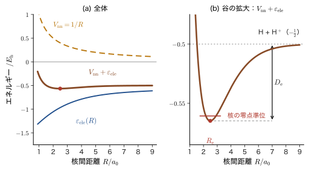
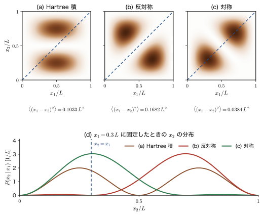

第33章多電子系の波動関数 — 原子単位・Born–Oppenheimer 近似・Hartree 積・Slater 行列式
ここまでの第III〜VI部で，量子力学がもっとも見事に働いたのは，水素原子のように電子が 1 個だけの系だった．電子 1 個の Schrödinger（シュレーディンガー）方程式は厳密に解け，その解（軌道）が周期表の骨組みを与えた（第15章）．ところが電子を 1 個増やしてヘリウム原子にすると，電子どうしの Coulomb（クーロン）反発 $e_0^2/(4\pi\varepsilon_0 r_{12})$ のせいで厳密な解はもう書き下せず，摂動論（第29章）と変分法（第30章〜第32章）で近似する必要があった．太陽・地球・月の 3 体問題が閉じた式で解けないのと同じ事情である．
しかし，材料を作るほとんどの原子・分子・固体は電子を 2 個以上もつ．銅 1 cm³ には約 $8.5\times10^{22}$ 個の原子があり，電子の総数は約 $2.5\times10^{24}$ 個にのぼる．これほど多数の粒子の運動を，どのように量子力学の言葉で書き，どのように近似するのか．それが第VII部の主題である．
この章はその出発点として，多電子系の波動関数を作るための 4 つの道具を用意する．第 1 は原子単位である．原子・分子の Schrödinger 方程式には $\hbar$，$m_{\mathrm e}$，$e_0$，$4\pi\varepsilon_0$ が何度も現れて式が読みにくくなるので，方程式を無次元化して，これらをすべて 1 とおく．第 2 は Born–Oppenheimer（ボルン–オッペンハイマー）近似である．分子や固体には電子だけでなく原子核もあるが，核は電子より 3 桁近く重く（陽子は電子の約 1836 倍），電子には核が止まって見える．そこで「核を止めたまま電子の問題を先に解き，その電子のエネルギーを核に対するポテンシャルとして核の運動を解く」という 2 段階に分ける．第 3 は電子どうしの相互作用がないときの厳密解である Hartree 積，第 4 は電子が区別できない粒子であることを取り入れた Slater（スレーター）行列式である．古典力学（AD 03）では，粒子はどれだけ似ていても軌跡で見分けられる．量子力学ではその区別が失われ，電子の波動関数には「2 個の電子の座標を入れ替えると符号が変わる」という制約（Pauli の排他原理）が課される．行列式という数学の道具（AD 02 第8章）が，この制約をちょうど満たしてくれる．
この部の見取り図（第VII部 多電子系の量子力学）
第VII部は，原子・分子・固体の電子状態を量子力学で計算する量子化学（quantum chemistry）の入り口である．この章の道具を使って，原子・分子・固体の電子状態を「1 電子の軌道を電子の数だけ並べる」考え方で組み立てていく．前の部からのつながりは次のとおりである：第III部の水素原子（電子 1 個の厳密解）と第IV部のスピン（電子の 2 つの状態 $\alpha,\beta$），第V部（第29章）でヘリウム原子の電子間反発を摂動として扱い，その 1 次のエネルギーが電子の雲どうしの Coulomb 反発 $U$ になること（本章の 33.1 節で $E_1+E_2+U$ の形に整理する），第VI部の変分原理（試行関数の期待値がエネルギーの上限を与えること）．
- 第33章（本章）：多電子系の波動関数．原子単位，Born–Oppenheimer 近似，Hartree 積，Slater 行列式．
- 第34章 多電子原子：電子配置，項記号，Hund の規則．周期表の電子的な意味．
- 第35章 Hartree–Fock 近似のエネルギー：Slater 行列式の期待値を計算し，Coulomb 積分 $U_{ab}$ と交換積分 $J_{ab}$ を導く．
- 第36章 Hartree–Fock 方程式：変分から Fock 演算子と Koopmans の定理へ．
- 第37章 SCF と Roothaan–Hall 方程式：基底関数展開と，計算化学の実際．
- 第38章〜第40章 化学結合：原子価結合法と混成軌道，分子軌道法と水素分子イオン，等核 2 原子分子と Hückel 法．
- 第41章・第42章 分子軌道から結晶のバンドへ：原子が $N\to\infty$ 個並ぶとバンドになる．
この先は，第VIII部（配位子場理論）で 3d 電子の多電子状態を扱い，第X部（第二量子化）で Slater 行列式が「占有数表示」という別の姿をとることを見る．姉妹編の「マテリアル計算科学（AD 05）」「密度汎関数理論（AD 07）」は，この部の内容をそのまま前提として，実際の計算法へ進む．
- ヘリウム原子の Schrödinger 方程式を書き，積の波動関数 $\psi_1(\bm{r}_1)\psi_2(\bm{r}_2)$ のエネルギー期待値が $E_1+E_2+U$ に分かれることを，積分を 1 行ずつ展開して確かめること
- 方程式の無次元化から原子単位（$a_0$，$E_{\mathrm h}$，$\hbar/E_{\mathrm h}$ など）を導き，$\hat{H}_{\mathrm{He}}=-\tfrac12\nabla_1^2-\tfrac12\nabla_2^2-\tfrac{2}{r_1}-\tfrac{2}{r_2}+\tfrac{1}{r_{12}}$ を書き，eV・$\mathrm{cm^{-1}}$・$\mathrm{kJ/mol}$ に換算できること
- 核 $M$ 個・電子 $N$ 個の系のハミルトニアンの 5 つの項を書き，Born–Oppenheimer 近似で電子の方程式と核の方程式に分け，「近似を入れた場所」を説明できること．核の質量が電子の $10^3$〜$10^5$ 倍あることの帰結（速度比 42.9，時間尺度）を数値で見積もること
- 電子のエネルギー $\varepsilon_{\mathrm{ele}}(\bm{R})$ が核に対するポテンシャル（ポテンシャルエネルギー面）になること，断熱近似の意味，そして Born–Oppenheimer 近似と平均場近似が別のものであることを説明できること
- 電子間相互作用がないときの解が Hartree 積になること，スピン軌道 $\chi_i(\bm{x})=\psi_i(\bm{r})\alpha(\sigma)$ または $\psi_i(\bm{r})\beta(\sigma)$ の意味，そして Hartree 積が電子を区別してしまう欠点を説明できること
- 交換演算子 $\hat{P}_{12}$ の固有値 $\pm1$ から Pauli の排他原理（反対称性原理）を述べ，Slater 行列式 $\Phi=\tfrac{1}{\sqrt{N!}}\det[\chi_j(\bm{x}_i)]$ がそれを満たすこと，規格直交であること，同じ軌道を 2 回使うと 0 になること，Fermi 孔（交換孔とも呼ぶ）ができることを示せること
もとにしたノート：望月泰英『物理学ノート 量子力学3』 pp. 29–31，pp. 45–49．
33.1 ヘリウム原子の方程式と原子単位
33.1.1 ヘリウム原子の Schrödinger 方程式
多電子系の最初の例として，ヘリウム原子を考える．原子核（電荷 $+2e_0$）を原点に置き，2 個の電子の位置を $\bm{r}_1$，$\bm{r}_2$ とする（図33.1）．本書では電気素量を $e_0=1.602\,176\,634\times10^{-19}\ \mathrm{C}$ と書く（AD 03 の $e$ と同じ量で，電子の電荷は $-e_0$）．原子核は電子よりはるかに重いので，ここでは動かないものとして扱う（この扱いを正当化するのが 33.2 節の Born–Oppenheimer 近似である）．電子は原子核から Coulomb 引力を受け，電子どうしは Coulomb 反発を受ける．電子の運動エネルギー，原子核との引力の位置エネルギー，電子間反発の位置エネルギーを合わせて，Schrödinger 方程式は次のようになる：
\begin{align} &-\frac{\hbar^2}{2m_{\mathrm e}}\left(\nabla_1^2+\nabla_2^2\right)\Psi(\bm{r}_1,\bm{r}_2) -\frac{2e_0^2}{4\pi\varepsilon_0}\left(\frac{1}{\abs{\bm{r}_1}}+\frac{1}{\abs{\bm{r}_2}}\right)\Psi(\bm{r}_1,\bm{r}_2)\notag\\ &\qquad+\frac{(-e_0)^2}{4\pi\varepsilon_0}\,\frac{1}{\abs{\bm{r}_1-\bm{r}_2}}\,\Psi(\bm{r}_1,\bm{r}_2)=E\,\Psi(\bm{r}_1,\bm{r}_2) \label{eq:33-he} \end{align}$\nabla_i^2=\partial^2/\partial x_i^2+\partial^2/\partial y_i^2+\partial^2/\partial z_i^2$ は電子 $i$ の座標についての Laplace 演算子，$m_{\mathrm e}$ は電子の質量である．左辺の第 1 項は 2 個の電子の運動エネルギー，第 2 項は，核（電荷 $+2e_0$）と電子（電荷 $-e_0$）の間の引力 $\dfrac{(2e_0)(-e_0)}{4\pi\varepsilon_0 r_i}=-\dfrac{2e_0^2}{4\pi\varepsilon_0 r_i}$ の位置エネルギー，第 3 項は電子どうしの反発 $\dfrac{(-e_0)(-e_0)}{4\pi\varepsilon_0 r_{12}}$ の位置エネルギーである．ここでは，スピンに依存する小さな項（スピン軌道相互作用，第26章）を無視して，波動関数を位置だけの関数 $\Psi(\bm{r}_1,\bm{r}_2)$ として書いた．スピンは 33.4 節以降で取り入れる．
考察：なぜ厳密に解けないのか
式 \eqref{eq:33-he} の第 3 項がなければ，ハミルトニアンは「電子 1 だけの部分」と「電子 2 だけの部分」の和になる．このとき $\Psi$ は $\bm{r}_1$ の関数と $\bm{r}_2$ の関数の積に分かれる（変数分離．33.4 節で示す）．第 3 項には $\abs{\bm{r}_1-\bm{r}_2}$ という，2 個の座標を同時に含む量があるため，どちらか一方の座標を固定して他方を解くという手が使えない．これが「電子間反発があるために厳密解が求まらない」理由である．電子が 3 個，4 個と増えれば，すべての電子の組（$N$ 個の電子なら $N(N-1)/2$ 組）が結びつくので，事情はいっそう悪くなる．
33.1.2 積の波動関数のエネルギー期待値
それでも，「2 電子の波動関数が 1 電子の関数の積 $\Psi(\bm{r}_1,\bm{r}_2)=\psi_1(\bm{r}_1)\,\psi_2(\bm{r}_2)$ の形に書ける」と仮定すれば，エネルギー期待値を 1 電子の量で書き表すことができる．第30章の変分原理の立場では，これは「積の形の試行関数を選んだ」ということである．$\psi_1$，$\psi_2$ は規格化されている（$\braket{\psi_1}{\psi_1}=\braket{\psi_2}{\psi_2}=1$，すなわち $\int\abs{\psi_i}^2\dd\bm{r}=1$）とする．ハミルトニアンを $\hat{H}$ と書くと，式 \eqref{eq:33-he} の左辺は $\hat{H}\Psi$ である．エネルギー期待値は，次のように定義される（$\dd\bm{r}_i=\dd x_i\dd y_i\dd z_i$）：
$$ \mel{\Psi}{\hat{H}}{\Psi}=\iint\psi_1^*(\bm{r}_1)\,\psi_2^*(\bm{r}_2)\,\hat{H}\,\psi_1(\bm{r}_1)\,\psi_2(\bm{r}_2)\dd\bm{r}_1\dd\bm{r}_2 . $$導出：積の波動関数のエネルギー期待値
式 \eqref{eq:33-he} の 3 種類の項を代入して，積分を項ごとに書き分ける（$\psi_i$ は $\psi_i(\bm{r}_i)$ の意味）：
\begin{align*} \mel{\Psi}{\hat{H}}{\Psi}&=-\frac{\hbar^2}{2m_{\mathrm e}}\iint\psi_1^*\psi_2^*\left(\nabla_1^2+\nabla_2^2\right)\psi_1\psi_2\dd\bm{r}_1\dd\bm{r}_2\\ &\quad-\frac{2e_0^2}{4\pi\varepsilon_0}\iint\psi_1^*\psi_2^*\left(\frac{1}{\abs{\bm{r}_1}}+\frac{1}{\abs{\bm{r}_2}}\right)\psi_1\psi_2\dd\bm{r}_1\dd\bm{r}_2\\ &\quad+\frac{e_0^2}{4\pi\varepsilon_0}\iint\psi_1^*\psi_2^*\frac{1}{\abs{\bm{r}_1-\bm{r}_2}}\psi_1\psi_2\dd\bm{r}_1\dd\bm{r}_2 . \end{align*}第 1 項では，$\nabla_1^2$ は $\bm{r}_1$ にだけ作用するので $\nabla_1^2\bigl[\psi_1(\bm{r}_1)\psi_2(\bm{r}_2)\bigr]=\psi_2(\bm{r}_2)\,\nabla_1^2\psi_1(\bm{r}_1)$，同様に $\nabla_2^2\bigl[\psi_1\psi_2\bigr]=\psi_1\nabla_2^2\psi_2$ である．したがって被積分関数は $\psi_1^*\psi_2^*(\nabla_1^2+\nabla_2^2)\psi_1\psi_2=\bigl(\psi_1^*\nabla_1^2\psi_1\bigr)\abs{\psi_2}^2+\abs{\psi_1}^2\bigl(\psi_2^*\nabla_2^2\psi_2\bigr)$ と，$\bm{r}_1$ だけの関数と $\bm{r}_2$ だけの関数の積の和になり，2 重積分は積分の積に分かれる．たとえば前者は $\displaystyle\int\psi_1^*\nabla_1^2\psi_1\dd\bm{r}_1\times\int\abs{\psi_2}^2\dd\bm{r}_2$ で，規格化 $\int\abs{\psi_2}^2\dd\bm{r}_2=\braket{\psi_2}{\psi_2}=1$ より第 1 の積分だけが残る．第 2 項も同じである（$1/\abs{\bm{r}_1}$ は $\bm{r}_1$ だけの関数）．こうして
\begin{align} \mel{\Psi}{\hat{H}}{\Psi}&=-\frac{\hbar^2}{2m_{\mathrm e}}\left(\int\psi_1^*\nabla_1^2\psi_1\dd\bm{r}_1+\int\psi_2^*\nabla_2^2\psi_2\dd\bm{r}_2\right)\notag\\ &\quad-\frac{2e_0^2}{4\pi\varepsilon_0}\left(\int\psi_1^*\frac{1}{\abs{\bm{r}_1}}\psi_1\dd\bm{r}_1+\int\psi_2^*\frac{1}{\abs{\bm{r}_2}}\psi_2\dd\bm{r}_2\right)\notag\\ &\quad+\frac{e_0^2}{4\pi\varepsilon_0}\iint\psi_1^*(\bm{r}_1)\psi_2^*(\bm{r}_2)\frac{1}{\abs{\bm{r}_1-\bm{r}_2}}\psi_1(\bm{r}_1)\psi_2(\bm{r}_2)\dd\bm{r}_1\dd\bm{r}_2 \label{eq:33-product-E} \end{align}となる．第 1 行と第 2 行は，電子 1 だけを含む積分と電子 2 だけを含む積分に分かれた．そこで，電子 $i$ の運動エネルギーと核との引力を合わせた 1 電子のエネルギー期待値を
$$ E_i\equiv\int\psi_i^*(\bm{r})\left[-\frac{\hbar^2}{2m_{\mathrm e}}\nabla^2-\frac{2e_0^2}{4\pi\varepsilon_0\abs{\bm{r}}}\right]\psi_i(\bm{r})\dd\bm{r}\qquad(i=1,2) $$と定義する（積分変数の名前は何でもよい）．第 3 行は 2 個の電子の座標を含んでいて分けられないので，1 つの量 $U$ とおく．結局
$$ \mel{\Psi}{\hat{H}}{\Psi}=E_1+E_2+U $$を得る．
（導出終わり）
定義33.1 電子間反発のエネルギー $U$
2 個の電子が 1 電子の軌道 $\psi_1$，$\psi_2$ の積の状態にあるとき，電子間の Coulomb 反発の期待値
\begin{equation} U=\frac{e_0^2}{4\pi\varepsilon_0}\iint\frac{\abs{\psi_1(\bm{r}_1)}^2\,\abs{\psi_2(\bm{r}_2)}^2}{\abs{\bm{r}_1-\bm{r}_2}}\dd\bm{r}_1\dd\bm{r}_2 \label{eq:33-U} \end{equation}を $U$ と書く（式 \eqref{eq:33-product-E} の第 3 行で $\psi_1^*\psi_1=\abs{\psi_1}^2$，$\psi_2^*\psi_2=\abs{\psi_2}^2$ とした）．$E_i$ は，電子 $i$ の運動エネルギーと核との引力を合わせた 1 電子エネルギーの期待値（1 電子積分）である．
$U$ の意味は古典的である．$e_0\abs{\psi_1(\bm{r}_1)}^2\dd\bm{r}_1$ は，電子 1 の電荷の大きさを空間に薄く広げた「電荷の雲」の，体積 $\dd\bm{r}_1$ の中の電荷である．式 \eqref{eq:33-U} は，2 つの電荷の雲の間の静電エネルギー（すべての微小部分の対の Coulomb 反発エネルギーの和）にほかならない．雲の一方の部分と他方の部分の距離 $\abs{\bm{r}_1-\bm{r}_2}$ が近い部分が多いほど $U$ は大きい．
イメージ：電子間反発を 1 つの量にまとめる
式 \eqref{eq:33-product-E} は，2 電子のエネルギーが「電子 1 個ずつのエネルギー（$E_1$，$E_2$）の和」と「電子間反発のエネルギー $U$」に分けて書けることを示している．難しい 2 電子の相互作用が，$U$ という 1 つの数にまとまったのである．もし $\psi_i$ が 1 電子のハミルトニアン $\hat{h}=-\dfrac{\hbar^2}{2m_{\mathrm e}}\nabla^2-\dfrac{2e_0^2}{4\pi\varepsilon_0 r}$ の固有関数（水素様の軌道）なら，$E_i$ はその固有値 $\varepsilon_i$ になり，$E_1+E_2$ は電子間反発を無視した「ゼロ次」のエネルギー，$U$ は電子間反発による 1 次の補正である．これは，第29章 29.3 節で電子間反発を摂動として扱ったときの 1 次摂動エネルギーとまったく同じ形である．
問い：積の形に「変数分離できる」のはなぜか
この仮定は妥当だろうか．厳密にいえば，電子間反発があるとき $\Psi$ は積の形にならない（積の形は近似）．積の形が厳密な解になるのは，ハミルトニアンが電子ごとの項の和に書ける場合，つまり電子間相互作用がない場合だけである（33.4 節）．電子間反発があるときも，積を試行関数として使えば，エネルギー期待値は式 \eqref{eq:33-product-E} のように計算でき，変分原理により真のエネルギーの上限を与える．積の形をさらに改良する道が Hartree 法と Hartree–Fock 法であり（第36章），そのためにまず，電子が区別できないという事実を波動関数に取り入れる必要がある（33.5 節と 33.6 節）．
この積分の具体的な値，つまり $U$ の計算（ヘリウム原子の 1s 軌道の積では $U=5Z/8$ ハートリー）は第29章 29.2 節で一行ずつ行った．次の 33.1.3 節で原子単位を導入してから，数値をこの式に代入する（例題33.2）．なお，ここで使った記号 $U$ は，第35章で 2 個のスピン軌道 $\chi_a$，$\chi_b$ の間の Coulomb 積分 $U_{ab}$ に一般化される．
33.1.3 方程式の無次元化 — 原子単位
式 \eqref{eq:33-he} には $\hbar$，$m_{\mathrm e}$，$e_0$，$4\pi\varepsilon_0$ が何度も現れ，式が読みにくい．数値を出すときも，$10^{-31}\ \mathrm{kg}$ や $10^{-18}\ \mathrm{J}$ のような小さな数を扱うことになる．物理学の常套手段は，長さとエネルギーの単位を問題に合わせて選び，方程式を無次元化することである．ヘリウム原子の方程式を題材にして，自然な単位が何になるかを導こう．第30〜32章では，原子単位を先取りして使った（最初は第30章 30.5 節）．その由来をここで示す．
導出：無次元化と原子単位
[i] 長さの単位 $\ell$ とエネルギーの単位 $E_{\mathrm u}$ を，まだ値を決めないまま導入する．長さとエネルギーを，それぞれ単位で割った無次元の量（チルダで表す）
$$ \bm{r}_i=\ell\,\tilde{\bm{r}}_i,\qquad r_{12}=\ell\,\tilde{r}_{12},\qquad E=E_{\mathrm u}\tilde{E} $$で書き直す．微分は $\nabla_i^2=\ell^{-2}\tilde{\nabla}_i^2$ となる（$\tilde{\nabla}_i$ は $\tilde{\bm{r}}_i$ についての微分）．式 \eqref{eq:33-he} に代入すると，
$$ \left[-\frac{\hbar^2}{2m_{\mathrm e}\ell^2}\left(\tilde{\nabla}_1^2+\tilde{\nabla}_2^2\right)-\frac{e_0^2}{4\pi\varepsilon_0\ell}\left(\frac{2}{\tilde{r}_1}+\frac{2}{\tilde{r}_2}\right)+\frac{e_0^2}{4\pi\varepsilon_0\ell}\frac{1}{\tilde{r}_{12}}\right]\Psi=E_{\mathrm u}\tilde{E}\,\Psi $$となる．[ii] 括弧の中の係数には，エネルギーの次元をもつ 2 つの組み合わせ，運動エネルギーの尺度 $\dfrac{\hbar^2}{m_{\mathrm e}\ell^2}$ と Coulomb エネルギーの尺度 $\dfrac{e_0^2}{4\pi\varepsilon_0\ell}$ がある．（次元の確認：$\hbar^2/(m_{\mathrm e}\ell^2)$ の単位は $(\mathrm{J\,s})^2/(\mathrm{kg\,m^2})=\mathrm{J}$，$e_0^2/(4\pi\varepsilon_0\ell)$ の単位は $\mathrm{C^2/[(F/m)\cdot m]}=\mathrm{C^2/F}=\mathrm{J}$ である．）長さの単位 $\ell$ は自由に選べるので，この 2 つが等しくなるように選ぶ：
$$ \frac{\hbar^2}{m_{\mathrm e}\ell^2}=\frac{e_0^2}{4\pi\varepsilon_0\ell}\qquad\Longrightarrow\qquad \ell=\frac{4\pi\varepsilon_0\hbar^2}{m_{\mathrm e}e_0^2}\equiv a_0 . $$これは Bohr 半径（第15章の水素原子の 1s 軌道の広がり）にほかならない．このとき 2 つの尺度は共通の値 $\dfrac{e_0^2}{4\pi\varepsilon_0a_0}=\dfrac{\hbar^2}{m_{\mathrm e}a_0^2}\equiv E_{\mathrm h}$ になる．[iii] エネルギーの単位を $E_{\mathrm u}=E_{\mathrm h}$ にとって両辺を $E_{\mathrm h}$ で割ると，定数がすべて消えて
\begin{equation} \left[-\frac12\left(\tilde{\nabla}_1^2+\tilde{\nabla}_2^2\right)-\frac{2}{\tilde{r}_1}-\frac{2}{\tilde{r}_2}+\frac{1}{\tilde{r}_{12}}\right]\Psi=\tilde{E}\,\Psi \label{eq:33-he-au} \end{equation}となる．
（導出終わり）
定義33.2 原子単位（Hartree 単位）
長さの単位を Bohr 半径 $a_0$，エネルギーの単位を Hartree エネルギー $E_{\mathrm h}$：
\begin{equation} a_0=\frac{4\pi\varepsilon_0\hbar^2}{m_{\mathrm e}e_0^2}=0.529\,177\ \text{Å},\qquad E_{\mathrm h}=\frac{e_0^2}{4\pi\varepsilon_0a_0}=\frac{\hbar^2}{m_{\mathrm e}a_0^2}=\frac{m_{\mathrm e}e_0^4}{(4\pi\varepsilon_0)^2\hbar^2}=27.211\,386\ \mathrm{eV} \label{eq:33-au} \end{equation}にとる単位系を原子単位（atomic units，a.u.）という．同じことを，$\hbar=m_{\mathrm e}=e_0^2/(4\pi\varepsilon_0)=1$ とおく，と言い表してもよい（電子の質量が質量の単位，$e_0$ が電荷の単位，$\hbar$ が作用の単位）．原子単位では，式に書かれた長さは $a_0$ の何倍か，エネルギーは $E_{\mathrm h}$ の何倍かを表す．「$1/r$」と書かれていれば，SI の $\dfrac{e_0^2}{4\pi\varepsilon_0 r}$ に当たる．
原子単位で書いたヘリウム原子（一般には核電荷 $Z$ の He 型原子・イオン）のハミルトニアンは，チルダを取って，
\begin{equation} \hat{H}_{\mathrm{He}}=-\frac12\nabla_1^2-\frac12\nabla_2^2-\frac{Z}{r_1}-\frac{Z}{r_2}+\frac{1}{r_{12}}\qquad(Z=2) \label{eq:33-H-au} \end{equation}である．式 \eqref{eq:33-he} に比べて，見通しが格段によくなった．たとえば 1 電子のハミルトニアン $\hat{h}=-\tfrac12\nabla^2-Z/r$ の 1s 軌道は $\psi_{1s}(r)=\sqrt{Z^3/\pi}\,e^{-Zr}$，そのエネルギーは $\varepsilon_{1s}=-Z^2/2$ で，運動エネルギーの期待値は $\expval{T}=Z^2/2$，位置エネルギーの期待値は $\expval{V}=-Z^2$ である（第30章と第32章で使った）．水素原子（$Z=1$）では $-\tfrac12E_{\mathrm h}=-13.606\ \mathrm{eV}$ であり，$E_{\mathrm h}$ が水素原子のイオン化エネルギーのちょうど 2 倍であることがわかる．$E_{\mathrm h}$ の名は Douglas Hartree にちなむ．
| 量 | 原子単位の定義 | SI での値 |
|---|---|---|
| 質量 | $m_{\mathrm e}$ | $9.109\,384\times10^{-31}\ \mathrm{kg}$ |
| 電荷 | $e_0$ | $1.602\,177\times10^{-19}\ \mathrm{C}$ |
| 作用（角運動量） | $\hbar$ | $1.054\,572\times10^{-34}\ \mathrm{J\,s}$ |
| 長さ | $a_0=\dfrac{4\pi\varepsilon_0\hbar^2}{m_{\mathrm e}e_0^2}$ | $5.291\,772\times10^{-11}\ \mathrm{m}$（$0.529\,177\ \text{Å}$） |
| エネルギー | $E_{\mathrm h}=\dfrac{\hbar^2}{m_{\mathrm e}a_0^2}$ | $4.359\,745\times10^{-18}\ \mathrm{J}$（$27.211\,386\ \mathrm{eV}$） |
| 時間 | $\hbar/E_{\mathrm h}$ | $2.418\,884\times10^{-17}\ \mathrm{s}$（$24.19\ \mathrm{as}$） |
| 速度 | $a_0E_{\mathrm h}/\hbar=\alpha c$ | $2.187\,691\times10^{6}\ \mathrm{m/s}$（光速の $1/137.036$） |
| 運動量 | $\hbar/a_0$ | $1.992\,852\times10^{-24}\ \mathrm{kg\,m/s}$ |
| 電場 | $E_{\mathrm h}/(e_0a_0)$ | $5.142\,207\times10^{11}\ \mathrm{V/m}$ |
| 磁束密度 | $\hbar/(e_0a_0^2)$ | $2.350\,518\times10^{5}\ \mathrm{T}$ |
| 電気双極子モーメント | $e_0a_0$ | $8.478\,354\times10^{-30}\ \mathrm{C\,m}$（$2.541\,747\ \mathrm{D}$） |
| 単位 | $1\ E_{\mathrm h}$ に相当する値 | 逆向き |
|---|---|---|
| 電子ボルト | $27.211\,386\ \mathrm{eV}$ | $1\ \mathrm{eV}=0.036\,749\,32\ E_{\mathrm h}$ |
| Rydberg | $2\ \mathrm{Ry}$（$1\ \mathrm{Ry}=13.605\,693\ \mathrm{eV}$） | $1\ \mathrm{Ry}=0.5\ E_{\mathrm h}$ |
| 波数 | $219\,474.63\ \mathrm{cm^{-1}}$ | $1\ \mathrm{cm^{-1}}=4.556\,335\times10^{-6}\ E_{\mathrm h}$ |
| 温度（$E_{\mathrm h}/k_{\mathrm B}$） | $315\,775\ \mathrm{K}$ | $300\ \mathrm{K}\leftrightarrow0.000\,950\ E_{\mathrm h}$ |
| モルあたりのエネルギー | $2625.50\ \mathrm{kJ/mol}=627.51\ \mathrm{kcal/mol}$ | $1\ \mathrm{kJ/mol}=3.8088\times10^{-4}\ E_{\mathrm h}$ |
注意：他の単位系との違い
(1) 原子単位の Hartree エネルギーは，Rydberg 単位（$1\ \mathrm{Ry}=E_{\mathrm h}/2$）と 2 倍違う．水素原子の基底状態のエネルギーは，原子単位で $-\tfrac12$，Rydberg 単位で $-1$ である．Rydberg 単位では $\hbar=2m_{\mathrm e}=1$ ととるので，運動エネルギー演算子が $-\nabla^2$ になる．どちらの単位系で書かれた文献か，ハミルトニアンの運動項が $-\tfrac12\nabla^2$ か $-\nabla^2$ かで見分けるとよい．(2) Gauss 単位系（姉妹編・他書の一部で使われる）では，電荷の 2 乗 $e^2$ が SI の $e_0^2/(4\pi\varepsilon_0)$ に当たる．Gauss 単位系で $\hbar=m_{\mathrm e}=e=1$ とおくと，原子単位と同じ数値になる．(3) 関連シミュレーターでは Bohr 半径を $a_{\mathrm B}$ と書くが，本書の $a_0$ と同じ量である．(4) 原子単位では光速が $c=1/\alpha=137.036$ になる（第XI部で相対論的な効果を扱うときに使う）．
原子単位で得た結果は，最後に単位をかけ戻して SI に直す．長さなら $a_0$ を，エネルギーなら $E_{\mathrm h}$（または表33.2 の換算）をかければよい．次の 2 つの例題で練習しよう．
例題33.1 SI の定数から原子単位を計算する
(1) $\hbar=1.054\,571\,8\times10^{-34}\ \mathrm{J\,s}$，$m_{\mathrm e}=9.109\,383\,7\times10^{-31}\ \mathrm{kg}$，$e_0=1.602\,176\,6\times10^{-19}\ \mathrm{C}$，$\varepsilon_0=8.854\,187\,8\times10^{-12}\ \mathrm{F/m}$ から，$a_0$，$E_{\mathrm h}$，時間の単位 $\hbar/E_{\mathrm h}$ を求めよ．(2) 水素分子 $\mathrm{H_2}$ の平衡核間距離 $0.7414\ \text{Å}$ は何 $a_0$ か．(3) 水素原子の基底状態のエネルギー $-\tfrac12E_{\mathrm h}$ を $\mathrm{eV}$，$\mathrm{cm^{-1}}$ で表せ．(4) 水素分子イオン $\mathrm{H_2^+}$ の結合エネルギー $D_{\mathrm e}=0.0648\,E_{\mathrm h}$（例題33.5）を $\mathrm{kJ/mol}$ で表せ．
解答 (1) $4\pi\varepsilon_0=4\pi\times8.854\,187\,8\times10^{-12}=1.112\,650\times10^{-10}\ \mathrm{F/m}$，$\hbar^2=1.112\,122\times10^{-68}\ \mathrm{J^2s^2}$，$e_0^2=2.566\,970\times10^{-38}\ \mathrm{C^2}$ である．
$$ a_0=\frac{4\pi\varepsilon_0\hbar^2}{m_{\mathrm e}e_0^2}=\frac{1.112\,650\times10^{-10}\times1.112\,122\times10^{-68}}{9.109\,384\times10^{-31}\times2.566\,970\times10^{-38}}=\frac{1.237\,402\times10^{-78}}{2.338\,351\times10^{-68}}=5.2918\times10^{-11}\ \mathrm{m} $$ $$ E_{\mathrm h}=\frac{e_0^2}{4\pi\varepsilon_0a_0}=\frac{2.566\,970\times10^{-38}}{1.112\,650\times10^{-10}\times5.291\,77\times10^{-11}}=\frac{2.566\,970\times10^{-38}}{5.887\,89\times10^{-21}}=4.3597\times10^{-18}\ \mathrm{J} $$である．$1\ \mathrm{eV}=1.602\,177\times10^{-19}\ \mathrm{J}$ で割って $E_{\mathrm h}=27.211\ \mathrm{eV}$．時間の単位は $\hbar/E_{\mathrm h}=\dfrac{1.054\,572\times10^{-34}}{4.359\,74\times10^{-18}}=2.4189\times10^{-17}\ \mathrm{s}=24.19\ \mathrm{as}$（アト秒，$1\ \mathrm{as}=10^{-18}\ \mathrm{s}$）である．検算として $E_{\mathrm h}=\hbar^2/(m_{\mathrm e}a_0^2)=1.112\,122\times10^{-68}/(9.109\,384\times10^{-31}\times2.8003\times10^{-21})=4.3597\times10^{-18}\ \mathrm{J}$ と一致する（$a_0^2=2.8003\times10^{-21}\ \mathrm{m^2}$）．
(2) $\dfrac{0.7414\ \text{Å}}{0.529\,177\ \text{Å}}=1.401$．$\mathrm{H_2}$ の結合の長さは，約 $1.4\,a_0$ である．
(3) $-\tfrac12\times27.211\,386=-13.6057\ \mathrm{eV}$．波数にすると $-\tfrac12\times219\,474.63=-109\,737.3\ \mathrm{cm^{-1}}$（Rydberg 定数 $R_\infty=109\,737.3\ \mathrm{cm^{-1}}$ に等しい）．
(4) $1\,E_{\mathrm h}$ のモル（Avogadro 定数 $N_{\mathrm A}=6.022\,141\times10^{23}\ \mathrm{mol^{-1}}$ 個）分は $4.359\,745\times10^{-18}\ \mathrm{J}\times6.022\,141\times10^{23}\ \mathrm{mol^{-1}}=2.6255\times10^{6}\ \mathrm{J/mol}=2625.5\ \mathrm{kJ/mol}$ なので，$0.0648\times2625.5\ \mathrm{kJ/mol}=170.1\ \mathrm{kJ/mol}$ である．eV を経由しても，$0.0648\times27.2114\ \mathrm{eV}=1.763\ \mathrm{eV}$，$1\ \mathrm{eV}=96.485\ \mathrm{kJ/mol}$ より $1.763\times96.485=170.1\ \mathrm{kJ/mol}$ と一致する．
例題33.2 ヘリウム原子の積の波動関数のエネルギー（原子単位）
ヘリウム原子（$Z=2$）の 2 個の電子がともに He$^+$ の 1s 軌道 $\psi(r)=\sqrt{Z^3/\pi}\,e^{-Zr}$（$Z=2$）にあるとし，$\Psi=\psi(\bm{r}_1)\psi(\bm{r}_2)$ とする．(1) $E_1$，$E_2$ を求めよ．(2) $U=\dfrac58Z$ を使って $\mel{\Psi}{\hat{H}}{\Psi}=E_1+E_2+U$ を求め，$\mathrm{eV}$ に換算せよ．(3) 厳密な非相対論的エネルギー $-2.9037\,E_{\mathrm h}$ と比べ，また He$^+$ の 1s 電子のエネルギー $-2\,E_{\mathrm h}$ から，この近似でのイオン化エネルギーを求めよ．
解答 (1) 式 \eqref{eq:33-H-au} の 1 電子の部分は $\hat{h}=-\tfrac12\nabla^2-2/r$ である．$\psi$ は $Z=2$ の水素様 1s 軌道なので，$\hat{h}\psi=-\tfrac{Z^2}{2}\psi=-2\psi$ で，$E_1=E_2=\int\psi^*\hat{h}\psi\dd\bm{r}=-2$．確かめると，運動エネルギー $\expval{T}=Z^2/2=2$，核との引力 $\expval{-2/r}=-2\times\expval{1/r}=-2\times Z=-4$（$\expval{1/r}=Z$，第15章）で，$E_i=2-4=-2\,E_{\mathrm h}$．
(2) $U=\tfrac58\times2=\tfrac54=1.25\,E_{\mathrm h}$ なので，
$$ \mel{\Psi}{\hat{H}}{\Psi}=-2-2+1.25=-2.75\,E_{\mathrm h}=-2.75\times27.2114\ \mathrm{eV}=-74.83\ \mathrm{eV}. $$(3) 厳密な値は $-2.9037\,E_{\mathrm h}=-79.01\ \mathrm{eV}$ で，近似の誤差は $0.154\,E_{\mathrm h}=4.18\ \mathrm{eV}$（約 $5\ \%$）である．積の形の期待値は真の基底状態エネルギーより高い（変分原理）．He$^+$ の 1s 電子のエネルギーは $-2\,E_{\mathrm h}$ だから，イオン化エネルギーは $-2-(-2.75)=0.75\,E_{\mathrm h}=20.4\ \mathrm{eV}$ になる．実測は $24.59\ \mathrm{eV}$ で，積の近似は約 $4\ \mathrm{eV}$ 足りない．電子が互いに避け合う効果（電子相関）と，他方の電子による核電荷の遮蔽（軌道の広がり）を無視していることによる．この遮蔽の効果は，指数 $Z$ を変分パラメータにして $-2.8477\,E_{\mathrm h}=-77.49\ \mathrm{eV}$ まで改善できる（第31章）．
33.2 多原子系のハミルトニアンと Born–Oppenheimer 近似
33.1 節では原子核を原点に固定した．固体や分子では，原子核も動く．多数の核と多数の電子を含む系の方程式を，どこまで単純にできるだろうか．この節では，一般の系のハミルトニアンを書き，核と電子を分ける Born–Oppenheimer 近似を導く．この近似のおかげで，電子系を先に自己無撞着に計算（SCF．ある電子が感じる他の電子の作る場を，その電子自身の解から決め直す操作を，解が変わらなくなるまで繰り返す方法．第36章・第37章）してから，原子核を動かすという 2 段階の手順が許される．電子と核の方程式の分離を一行ずつたどったあと，その分離が近似であること，近似がどこに入っているかを明らかにする．
33.2.1 核 $M$ 個・電子 $N$ 個のハミルトニアン
注目する系に，原子核が $M$ 個，電子が $N$ 個あるとする．核 $I$（$I=1,\dots,M$）の位置，質量，電荷を $\bm{R}_I$，$M_I$，$Z_Ie_0$（$Z_I$ は原子番号），電子 $i$（$i=1,\dots,N$）の位置と質量を $\bm{r}_i$，$m_{\mathrm e}$ と書く．核の座標全体を $\bm{R}=\{\bm{R}_1,\bm{R}_2,\dots,\bm{R}_M\}$，電子の座標全体を $\bm{r}=\{\bm{r}_1,\bm{r}_2,\dots,\bm{r}_N\}$ と略記する．系のハミルトニアンは，核の運動エネルギー，電子の運動エネルギー，核–電子の引力，核–核の反発，電子–電子の反発の 5 項の和である（図33.2）：
\begin{align} \hat{H}&=\sum_{I=1}^{M}\frac{-\hbar^2}{2M_I}\nabla_I^2+\sum_{i=1}^{N}\frac{-\hbar^2}{2m_{\mathrm e}}\nabla_i^2-\frac{1}{4\pi\varepsilon_0}\sum_{I=1}^{M}\sum_{i=1}^{N}\frac{Z_Ie_0^2}{\abs{\bm{R}_I-\bm{r}_i}}\notag\\ &\quad+\frac12\cdot\frac{1}{4\pi\varepsilon_0}\sum_{I=1}^{M}\sum_{J=1}^{M}\frac{Z_IZ_Je_0^2}{\abs{\bm{R}_I-\bm{R}_J}}+\frac12\cdot\frac{1}{4\pi\varepsilon_0}\sum_{i=1}^{N}\sum_{j=1}^{N}\frac{e_0^2}{\abs{\bm{r}_i-\bm{r}_j}} \label{eq:33-H-general} \end{align}ただし，最後の 2 つの和は $I\neq J$，$i\neq j$ の項だけをとる（同じ粒子の自己相互作用は入れない）．$\nabla_I^2$ は核の座標 $\bm{R}_I$ についての Laplace 演算子である．粒子の対 $\{I,J\}$ の反発は，和の中に $(I,J)$ と $(J,I)$ の 2 通りで現れるので，係数 $\tfrac12$ をつけて 1 回分に直している．これは，$J>I$ の対だけを 1 回ずつ数える書き方と同じで，最後の 2 項は
\begin{equation} \frac{1}{4\pi\varepsilon_0}\left(\sum_{I=1}^{M}\sum_{J\gt I}^{M}\frac{Z_IZ_Je_0^2}{\abs{\bm{R}_I-\bm{R}_J}}+\sum_{i=1}^{N}\sum_{j\gt i}^{N}\frac{e_0^2}{\abs{\bm{r}_i-\bm{r}_j}}\right) \label{eq:33-pairs} \end{equation}と表現できる（核の対は $M(M-1)/2$ 組，電子の対は $N(N-1)/2$ 組）．水を例にとれば，$M=3$（O が 1 個，H が 2 個），$N=10$ で，電子の対だけで $45$ 組ある．固体では $N$ が $10^{23}$ のオーダーになる．また，ハミルトニアンにはスピンは現れない．電子のスピン変数 $\sigma_i=\pm\tfrac12$（第23章 23.5 節）の全体を $\sigma=\{\sigma_1,\dots,\sigma_N\}$ と書くと，波動関数は $\Psi(\bm{r},\sigma,\bm{R})$ のように，$\bm{r}$，$\sigma$，$\bm{R}$ の関数である．
原子単位（33.1.3 節）で書くと，式 \eqref{eq:33-H-general} は次のようにすっきりする．核の質量 $M_I$ は電子の質量 $m_{\mathrm e}$ を単位にした値（陽子なら $1836.15$，炭素の核なら約 $2.2\times10^4$）で表す：
\begin{equation} \hat{H}=-\sum_{I=1}^{M}\frac{1}{2M_I}\nabla_I^2-\sum_{i=1}^{N}\frac12\nabla_i^2-\sum_{I=1}^{M}\sum_{i=1}^{N}\frac{Z_I}{\abs{\bm{R}_I-\bm{r}_i}}+\sum_{I=1}^{M}\sum_{J\gt I}^{M}\frac{Z_IZ_J}{\abs{\bm{R}_I-\bm{R}_J}}+\sum_{i=1}^{N}\sum_{j\gt i}^{N}\frac{1}{\abs{\bm{r}_i-\bm{r}_j}} \label{eq:33-H-general-au} \end{equation}33.2.2 全波動関数を積とおく — 電子の方程式と核の方程式
なお，以下（33.2〜33.3 節）では，多電子の電子の波動関数を $\Psi_{\mathrm{ele}}$，$\Psi_n$，核の波動関数を $\Psi_{\mathrm{nuc}}$（または $F_n$）と大文字で書く．33.4 節以降の 1 電子の軌道 $\psi_i$（小文字）とは別のものである．
5 つの項を，作用する変数によって分類しておこう．核の運動エネルギー演算子 $\hat{T}_{\mathrm{nuc}}$（第 1 項）は核の座標 $\bm{R}$ だけに，電子の運動エネルギー演算子 $\hat{T}_{\mathrm{ele}}$（第 2 項）は電子の座標 $\bm{r}$ だけに作用する．残りの 3 項はポテンシャルエネルギー（座標をかけるだけ）で，核–核 $V_{\mathrm{nn}}(\bm{R})$ は $\bm{R}$ だけの関数，電子–電子 $V_{\mathrm{ee}}(\bm{r})$ は $\bm{r}$ だけの関数，核–電子 $V_{\mathrm{ne}}(\bm{r},\bm{R})$ は $\bm{r}$ と $\bm{R}$ の両方の関数である．すなわち
\begin{equation} \hat{H}=\hat{T}_{\mathrm{nuc}}+\hat{T}_{\mathrm{ele}}+V_{\mathrm{nn}}(\bm{R})+V_{\mathrm{ee}}(\bm{r})+V_{\mathrm{ne}}(\bm{r},\bm{R}) \label{eq:33-H-split} \end{equation}と書ける．そこで，系の全波動関数を，電子の波動関数 $\Psi_{\mathrm{ele}}(\bm{r},\sigma)$ と核の波動関数 $\Psi_{\mathrm{nuc}}(\bm{R})$ の積
\begin{equation} \Psi(\bm{r},\sigma,\bm{R})=\Psi_{\mathrm{ele}}(\bm{r},\sigma)\,\Psi_{\mathrm{nuc}}(\bm{R}) \label{eq:33-prod-total} \end{equation}とおいてみよう（ここでは，右辺の $\Psi_{\mathrm{ele}}$ は $\bm{R}$ に依存しないとして進み，33.2.3 節でこの点を見直す）．$\hat{H}$ を積に作用させる．$\hat{T}_{\mathrm{nuc}}$ は $\Psi_{\mathrm{nuc}}$ にだけ，$\hat{T}_{\mathrm{ele}}$ は $\Psi_{\mathrm{ele}}$ にだけ作用し，ポテンシャルは単にかけ算だから，Schrödinger 方程式 $\hat{H}\Psi=E_{\mathrm{total}}\Psi$ の左辺は，核だけに関わる項と電子に関わる項に分けて
\begin{align} \hat{H}\,\Psi_{\mathrm{ele}}(\bm{r},\sigma)\,\Psi_{\mathrm{nuc}}(\bm{R})&=\Bigl[\hat{T}_{\mathrm{nuc}}\Psi_{\mathrm{nuc}}(\bm{R})+V_{\mathrm{nn}}(\bm{R})\Psi_{\mathrm{nuc}}(\bm{R})\Bigr]\Psi_{\mathrm{ele}}(\bm{r},\sigma)\notag\\ &\quad+\Bigl[\hat{T}_{\mathrm{ele}}\Psi_{\mathrm{ele}}(\bm{r},\sigma)+V_{\mathrm{ee}}(\bm{r})\Psi_{\mathrm{ele}}(\bm{r},\sigma)+V_{\mathrm{ne}}(\bm{r},\bm{R})\Psi_{\mathrm{ele}}(\bm{r},\sigma)\Bigr]\Psi_{\mathrm{nuc}}(\bm{R})\notag\\ &=E_{\mathrm{total}}\,\Psi_{\mathrm{ele}}(\bm{r},\sigma)\,\Psi_{\mathrm{nuc}}(\bm{R}) \label{eq:33-prod-schr} \end{align}となる．両辺を $\Psi_{\mathrm{ele}}(\bm{r},\sigma)\,\Psi_{\mathrm{nuc}}(\bm{R})$ で割ると（分子・分母の同じ関数が約分される），
\begin{equation} \underbrace{\frac{\hat{T}_{\mathrm{nuc}}\Psi_{\mathrm{nuc}}(\bm{R})}{\Psi_{\mathrm{nuc}}(\bm{R})}+V_{\mathrm{nn}}(\bm{R})}_{\bm{R}\text{ のみに依存する量 }\varepsilon_{\mathrm{nuc}}} +\underbrace{\frac{\hat{T}_{\mathrm{ele}}\Psi_{\mathrm{ele}}(\bm{r},\sigma)}{\Psi_{\mathrm{ele}}(\bm{r},\sigma)}+V_{\mathrm{ee}}(\bm{r})+V_{\mathrm{ne}}(\bm{r},\bm{R})}_{\bm{r}\text{ と }\bm{R}\text{ を含むが，実は }\bm{R}\text{ のみの量 }\varepsilon_{\mathrm{ele}}(\bm{R})}=E_{\mathrm{total}} \label{eq:33-divided} \end{equation}を得る．ここで $\hat{T}_{\mathrm{nuc}}=-\sum_I\dfrac{\hbar^2}{2M_I}\nabla_I^2$，$\hat{T}_{\mathrm{ele}}=-\sum_i\dfrac{\hbar^2}{2m_{\mathrm e}}\nabla_i^2$ である．
なぜこれが 2 つの方程式になるのか
式 \eqref{eq:33-divided} の第 1 の括弧は核の座標 $\bm{R}$ だけの関数である．これを $\varepsilon_{\mathrm{nuc}}$ と書く．第 2 の括弧（$\varepsilon_{\mathrm{ele}}$ と書く）は，見かけの上では電子の座標 $\bm{r}$ の関数だが，核–電子の引力 $V_{\mathrm{ne}}(\bm{r},\bm{R})$ を通じて $\bm{R}$ にも依存する．和が定数 $E_{\mathrm{total}}$ なのだから，核の位置 $\bm{R}$ を止めておいて電子の座標 $\bm{r}$ だけを動かしても，第 2 の括弧の値は変わってはならない．つまり第 2 の括弧は「$\bm{r}$ によらず $\bm{R}$ だけで決まる値」$\varepsilon_{\mathrm{ele}}(\bm{R})$ でなければならない．これは，第 2 の括弧に $\Psi_{\mathrm{ele}}$ をかけた式が，核の位置 $\bm{R}$ をパラメータとして固定した電子の Schrödinger 方程式（固有値 $\varepsilon_{\mathrm{ele}}(\bm{R})$）になっているということである．
こうして，電子の波動関数と核の波動関数に関する次の連立微分方程式が得られる：
\begin{equation} \left\{ \begin{aligned} &-\sum_{i=1}^{N}\frac{\hbar^2}{2m_{\mathrm e}}\nabla_i^2\Psi_{\mathrm{ele}}(\bm{r},\sigma)+\Bigl[V_{\mathrm{ee}}(\bm{r})+V_{\mathrm{ne}}(\bm{r},\bm{R})\Bigr]\Psi_{\mathrm{ele}}(\bm{r},\sigma)=\varepsilon_{\mathrm{ele}}(\bm{R})\,\Psi_{\mathrm{ele}}(\bm{r},\sigma)\\ &-\sum_{I=1}^{M}\frac{\hbar^2}{2M_I}\nabla_I^2\Psi_{\mathrm{nuc}}(\bm{R})+V_{\mathrm{nn}}(\bm{R})\,\Psi_{\mathrm{nuc}}(\bm{R})=\varepsilon_{\mathrm{nuc}}\,\Psi_{\mathrm{nuc}}(\bm{R}) \end{aligned} \right. \label{eq:33-BO-system} \end{equation}第 1 式が電子の方程式，第 2 式が核の方程式である．式 \eqref{eq:33-divided} は $\varepsilon_{\mathrm{nuc}}+\varepsilon_{\mathrm{ele}}(\bm{R})=E_{\mathrm{total}}$ を意味する．したがって，$\varepsilon_{\mathrm{nuc}}=E_{\mathrm{total}}-\varepsilon_{\mathrm{ele}}(\bm{R})$ であって，核の方程式の右辺は，定数ではなく $\bm{R}$ に依存する量である．核の方程式の $\varepsilon_{\mathrm{nuc}}\Psi_{\mathrm{nuc}}$ を左辺に移して $\varepsilon_{\mathrm{ele}}(\bm{R})$ を含め直すと，式 \eqref{eq:33-nuc-eq} になる．これが 33.3 節の主題である．
注意：この導出のどこに近似が入っているか
式 \eqref{eq:33-prod-total} の積で $\Psi_{\mathrm{ele}}$ が $\bm{R}$ によらないとしたことと，$\hat{T}_{\mathrm{nuc}}$ が $\Psi_{\mathrm{ele}}$ に作用しないとしたことが，近似である．実際の電子の波動関数は，第 1 式の解であり，核の位置 $\bm{R}$ に依存する（核が動けば電子の雲も動く）．その場合 $\hat{T}_{\mathrm{nuc}}$ は $\Psi_{\mathrm{ele}}(\bm{r},\sigma;\bm{R})$ にも作用し，余分な項（非断熱結合）が現れる．すなわち，$V_{\mathrm{ne}}(\bm{r},\bm{R})$ が $\bm{R}$ に依存する以上，厳密には電子の波動関数も $\bm{R}$ に依存し，「$\Psi_{\mathrm{ele}}$ が $\bm{R}$ によらない」という仮定は，ある 1 つの $\bm{R}$ で考えるか，$\bm{R}$ の変化が小さいときにだけ成り立つ．この項は電子と核の質量比が小さいほど小さく（対角の補正 $\Lambda_{nn}$ は $m_{\mathrm e}/M_I$ に比例し，異なる電子状態をつなぐ非対角の結合は $\kappa^3=(m_{\mathrm e}/M_I)^{3/4}$ 程度．$\kappa$ は 33.2.4 節で導入する），Born–Oppenheimer 近似ではこれを落とす．この仮定を見直して，落とす項を明示した「厳密な展開」を導くのが，次の 33.2.3 節である．
33.2.3 発展：厳密な展開 — 近似で落とす項を明示する
この小節は発展的な内容である．初読では，結論（厳密な方程式 \eqref{eq:33-exact-nuc}，Born–Oppenheimer 近似の核の方程式 \eqref{eq:33-nuc-eq}，および落とす項が質量比 $m_{\mathrm e}/M$ に応じて小さいこと）だけを読み，導出は後で読み返してもよい．
積の仮定 \eqref{eq:33-prod-total} を使わずに，正しく考え直そう．核の位置 $\bm{R}$ を，ひとまず定数（パラメータ）として固定する．すると，核–核の反発 $V_{\mathrm{nn}}$ は定数になり，残った電子の運動を表すハミルトニアンは次のようにまとめられる．
定義33.3 電子ハミルトニアンと電子状態
核の位置 $\bm{R}$ をパラメータとみなしたときの電子系のハミルトニアン
\begin{equation} \hat{H}_{\mathrm{ele}}(\bm{R})=\hat{T}_{\mathrm{ele}}+V_{\mathrm{ee}}(\bm{r})+V_{\mathrm{ne}}(\bm{r},\bm{R}) \label{eq:33-Hele} \end{equation}を電子ハミルトニアン，その固有値問題
\begin{equation} \hat{H}_{\mathrm{ele}}(\bm{R})\,\Psi_n(\bm{r},\sigma;\bm{R})=\varepsilon_n(\bm{R})\,\Psi_n(\bm{r},\sigma;\bm{R})\qquad(n=0,1,2,\dots) \label{eq:33-ele-eig} \end{equation}の解を電子状態という．$n=0$ が電子の基底状態で，そのエネルギー $\varepsilon_0(\bm{R})$ が，33.2.2 節の $\varepsilon_{\mathrm{ele}}(\bm{R})$ である．$\bm{R}$ を止めるたびに，固有関数 $\Psi_n$ は $\bm{r}$，$\sigma$ の関数として正規直交する：$\displaystyle\sum_\sigma\int\Psi_m^*\Psi_n\dd\bm{r}=\delta_{mn}$．固有関数は $\bm{R}$ にもパラメータとして依存するので，セミコロンの後ろに $\bm{R}$ を書いた．
各 $\bm{R}$ で $\{\Psi_n\}$ は電子の座標の関数の完全系をなすから，全波動関数は，係数が $\bm{R}$ の関数であるような展開
\begin{equation} \Psi(\bm{r},\sigma,\bm{R})=\sum_n F_n(\bm{R})\,\Psi_n(\bm{r},\sigma;\bm{R}) \label{eq:33-BH-expansion} \end{equation}に，一般性を失わずに書ける（Born–Huang 展開）．$F_n(\bm{R})$ は，電子が $n$ 番目の状態にあるときの核の波動関数である（記号 $\chi_i$ は本書ではスピン軌道に使うので，核の波動関数には $F_n$ を使う）．式 \eqref{eq:33-prod-total} は，$n=0$ の 1 項だけを残し，$\Psi_0$ の $\bm{R}$ 依存を無視した場合にあたる．
導出：核の波動関数に対する連立方程式
展開 \eqref{eq:33-BH-expansion} を $\hat{H}=\hat{T}_{\mathrm{nuc}}+V_{\mathrm{nn}}+\hat{H}_{\mathrm{ele}}$ に作用させる．電子の部分は式 \eqref{eq:33-ele-eig} により $\hat{H}_{\mathrm{ele}}\Psi_n=\varepsilon_n(\bm{R})\Psi_n$ で済む．核の運動エネルギーは，$\bm{R}_I$ についての微分だから $\Psi_n(\bm{r},\sigma;\bm{R})$ にも作用する．積の微分の規則で，
$$ \nabla_I^2\bigl(F_n\Psi_n\bigr)=\bigl(\nabla_I^2F_n\bigr)\Psi_n+2\bigl(\nabla_IF_n\bigr)\cdot\bigl(\nabla_I\Psi_n\bigr)+F_n\nabla_I^2\Psi_n $$である．$\hat{H}\Psi=E\Psi$ の両辺に $\Psi_m^*(\bm{r},\sigma;\bm{R})$ をかけて $\bm{r}$ で積分し $\sigma$ で和をとる（$\bm{R}$ は止めておく）．正規直交性 $\sum_\sigma\int\Psi_m^*\Psi_n\dd\bm{r}=\delta_{mn}$ により，$\Psi_n$ に微分がかからない項（$\hat{T}_{\mathrm{nuc}}F_n$，$V_{\mathrm{nn}}F_n$，$\varepsilon_nF_n$）は $n=m$ の項だけが残るので，
\begin{equation} \Bigl[\hat{T}_{\mathrm{nuc}}+V_{\mathrm{nn}}(\bm{R})+\varepsilon_m(\bm{R})\Bigr]F_m+\sum_n\Lambda_{mn}F_n=E\,F_m \label{eq:33-exact-nuc} \end{equation}を得る．ここで，微分が $\Psi_n$ にも作用して生じた項を
$$ \Lambda_{mn}F_n\equiv-\sum_{I=1}^{M}\frac{\hbar^2}{2M_I}\Bigl[2\,\bm{d}^{I}_{mn}\cdot\nabla_IF_n+g^{I}_{mn}F_n\Bigr],\qquad \bm{d}^{I}_{mn}=\sum_\sigma\!\int\Psi_m^*\nabla_I\Psi_n\dd\bm{r},\quad g^{I}_{mn}=\sum_\sigma\!\int\Psi_m^*\nabla_I^2\Psi_n\dd\bm{r} $$とまとめた．式 \eqref{eq:33-exact-nuc} は $m=0,1,2,\dots$ のすべてについて成り立ち，$\Lambda_{mn}$ が異なる電子状態 $m\neq n$ をつなぐ．これが非断熱結合である．式 \eqref{eq:33-exact-nuc} は近似を含まない厳密な方程式である．
$\Lambda_{mn}$ の性質．電子の波動関数が実数なら，規格化条件 $\sum_\sigma\int\Psi_n^2\dd\bm{r}=1$ を $\bm{R}_I$ で微分して $2\bm{d}^I_{nn}=0$，すなわち $\bm{d}^I_{nn}=\bm{0}$．もう 1 度微分すると $\sum_\sigma\int\bigl[\abs{\nabla_I\Psi_n}^2+\Psi_n\nabla_I^2\Psi_n\bigr]\dd\bm{r}=0$ なので，$g^I_{nn}=-\sum_\sigma\int\abs{\nabla_I\Psi_n}^2\dd\bm{r}\le0$．よって対角要素は
$$ \Lambda_{nn}=\sum_{I}\frac{\hbar^2}{2M_I}\sum_\sigma\!\int\abs{\nabla_I\Psi_n}^2\dd\bm{r}\ \ge0 $$と，核の運動エネルギーに似た正の量になる．異なる状態を結ぶ $m\neq n$ の $\bm{d}^I_{mn}$ は，式 \eqref{eq:33-ele-eig} を $\bm{R}_I$ で微分して $\Psi_m^*$ との積分をとると，$\bigl(\nabla_I\hat{H}_{\mathrm{ele}}\bigr)\Psi_n+\hat{H}_{\mathrm{ele}}\nabla_I\Psi_n=(\nabla_I\varepsilon_n)\Psi_n+\varepsilon_n\nabla_I\Psi_n$ の $\Psi_m$ 成分（$\hat{H}_{\mathrm{ele}}$ のエルミート性から $\braket{\Psi_m}{\hat{H}_{\mathrm{ele}}\nabla_I\Psi_n}=\varepsilon_m\bm{d}^I_{mn}$）により
$$ \bm{d}^{I}_{mn}=\frac{\mel{\Psi_m}{\nabla_I\hat{H}_{\mathrm{ele}}}{\Psi_n}}{\varepsilon_n-\varepsilon_m}\qquad(m\neq n) $$となる（$\nabla_I\hat{H}_{\mathrm{ele}}=\nabla_IV_{\mathrm{ne}}$ は，核 $I$ を動かしたときに電子が感じる力の演算子）．結合は電子準位の間隔 $\varepsilon_n-\varepsilon_m$ が小さいほど大きい．
（導出終わり）
この厳密な方程式から，2 段階の近似を区別できる．
- 非断熱結合を落とす（断熱近似）：異なる電子状態をつなぐ $\Lambda_{mn}$（$m\neq n$）を落とす．すると式 \eqref{eq:33-exact-nuc} は電子状態 $n$ ごとに独立な方程式 $\bigl[\hat{T}_{\mathrm{nuc}}+V_{\mathrm{nn}}+\varepsilon_n(\bm{R})+\Lambda_{nn}(\bm{R})\bigr]F_n=EF_n$ になる．核は，電子状態 $n$ のポテンシャル面（33.3 節）の上だけを動く．
- 対角の補正 $\Lambda_{nn}$ も落とす（Born–Oppenheimer 近似）：核の方程式は
になる．$n=0$（基底状態）が，33.3.1 節の式 \eqref{eq:33-nuc-pes} の核の方程式 $\bigl[\hat{T}_{\mathrm{nuc}}+V_{\mathrm{nn}}(\bm{R})+\varepsilon_{\mathrm{ele}}(\bm{R})\bigr]\Psi_{\mathrm{nuc}}(\bm{R})=E_{\mathrm{total}}\Psi_{\mathrm{nuc}}(\bm{R})$ である．落とされた $\Lambda_{nn}$ は，「断熱補正」あるいは対角 Born–Oppenheimer 補正とよばれ，大きさは質量比 $m_{\mathrm e}/M_I$ に比例する．$\hbar^2/(2M_I)\times\bigl(\text{電子軌道の変化率}\bigr)^2\sim(m_{\mathrm e}/M_I)\times\hbar^2/(2m_{\mathrm e}a_0^2)$ と見積もれるので，$(m_{\mathrm e}/M_I)E_{\mathrm h}$ の程度で，たとえば $\mathrm{H_2}$ の全エネルギーでは約 $1\times10^2\ \mathrm{cm^{-1}}$ である．ただし，解離した 2 個の H 原子も同種の補正をもつので（1 個あたり約 $60\ \mathrm{cm^{-1}}$），両者がほとんど打ち消し合い，結合エネルギー（約 $3.8\times10^4\ \mathrm{cm^{-1}}$）に現れる正味の効果は約 $5\ \mathrm{cm^{-1}}$（0.01 % 程度）にとどまる．
呼び方について
「断熱近似」と「Born–Oppenheimer 近似」は，文献によって同じ意味に使われたり，上のように区別されたりする．本書では，厳密な方程式 \eqref{eq:33-exact-nuc} から何を落とすかで，次のように区別する．
| 落とす項 | 近似の名前 | 核の方程式 |
|---|---|---|
| なし | 厳密（Born–Huang 展開） | 式 \eqref{eq:33-exact-nuc} |
| $\Lambda_{mn}$（$m\neq n$）だけ | 断熱近似 | $\bigl[\hat{T}_{\mathrm{nuc}}+V_{\mathrm{nn}}+\varepsilon_n+\Lambda_{nn}\bigr]F_n=EF_n$ |
| $\Lambda_{mn}$（$m\neq n$）と $\Lambda_{nn}$ の両方 | Born–Oppenheimer 近似 | 式 \eqref{eq:33-nuc-eq} |
どちらの近似でも，核を止めて電子の方程式 \eqref{eq:33-ele-eig} を解いて $\varepsilon_n(\bm{R})$ を求める手続きは共通で，核は電子状態 $n$ のポテンシャル面 $\varepsilon_n(\bm{R})$ の上を動く（33.3 節）．本章で単に「Born–Oppenheimer 近似」というときは，表の 3 行目（核が電子の基底状態のポテンシャル面の上だけを動く近似）を指す．
33.2.4 なぜ許されるのか — 質量比とエネルギー・時間の尺度
近似が正当化される根拠は，核が電子よりずっと重いことである．陽子の質量は電子の質量の $m_{\mathrm p}/m_{\mathrm e}=1836.15$ 倍で，核が重い元素ほど比はさらに大きい．
例題33.3 同じエネルギーの電子と陽子の速さ
運動エネルギーがどちらも $1\ \mathrm{eV}$ の電子と陽子の速さを求め，その比を質量比から説明せよ．
解答 運動エネルギー $K=\tfrac12mv^2$ より $v=\sqrt{2K/m}$．$K=1\ \mathrm{eV}=1.602\,177\times10^{-19}\ \mathrm{J}$ で，電子は
$$ v_{\mathrm e}=\sqrt{\frac{2\times1.602\,177\times10^{-19}}{9.109\,384\times10^{-31}}}=5.93\times10^{5}\ \mathrm{m/s}, $$陽子は $v_{\mathrm p}=\sqrt{\dfrac{2\times1.602\,177\times10^{-19}}{1.672\,622\times10^{-27}}}=1.38\times10^{4}\ \mathrm{m/s}$ である．比は
$$ \frac{v_{\mathrm e}}{v_{\mathrm p}}=\sqrt{\frac{m_{\mathrm p}}{m_{\mathrm e}}}=\sqrt{1836.15}=42.85\approx42.9 $$である（$K$ が共通なので，$v\propto m^{-1/2}$）．同じエネルギーなら電子は陽子の約 43 倍速い．したがって，電子から見ると核はほとんど止まって見える．逆に，核から見ると，電子は核のまわりを瞬時に動き回り，核の位置ごとに決まる平均的な雲として振る舞う．
もう少し定量的に，エネルギーと時間の尺度を比べよう．電子の運動のエネルギーは $E_{\mathrm h}$ の程度である．核が電子の作る谷のポテンシャル（ばね定数 $k\sim E_{\mathrm h}/a_0^2$）の中で振動するとき，その量子は
$$ \hbar\omega_{\mathrm{vib}}=\hbar\sqrt{\frac{k}{M}}\sim\hbar\sqrt{\frac{E_{\mathrm h}}{Ma_0^2}}=\hbar\sqrt{\frac{\hbar^2/(m_{\mathrm e}a_0^2)}{Ma_0^2}}=\frac{\hbar^2}{a_0^2\sqrt{m_{\mathrm e}M}}=\sqrt{\frac{m_{\mathrm e}}{M}}\,E_{\mathrm h} $$である（$\hbar^2/(m_{\mathrm e}a_0^2)=E_{\mathrm h}$ を使った）．核が回転する（分子全体が回る）エネルギーは $\hbar^2/(2Ma_0^2)\sim(m_{\mathrm e}/M)E_{\mathrm h}/2$ の程度である．Born と Oppenheimer は，質量比から作った小さなパラメータ $\kappa=(m_{\mathrm e}/M)^{1/4}$ で展開し，電子のエネルギー，振動，回転が，それぞれ $\kappa^0$，$\kappa^2$，$\kappa^4$ の階層をなすことを示した：
\begin{equation} E_{\mathrm{ele}}:E_{\mathrm{vib}}:E_{\mathrm{rot}}\sim1:\sqrt{\frac{m_{\mathrm e}}{M}}:\frac{m_{\mathrm e}}{M} \label{eq:33-hierarchy} \end{equation}である．
例題33.4 $\mathrm{H_2}$ の振動と電子の運動の時間比
$\mathrm{H_2}$ の振動（調和近似の波数 $\tilde{\nu}=\omega_{\mathrm e}=4401\ \mathrm{cm^{-1}}$．実際に観測される基本振動は非調和性のため低く，$\mathrm{H_2}$ で約 $4161\ \mathrm{cm^{-1}}$）の周期を求め，水素原子の 1s 電子の周期 $2\pi\hbar/E_{\mathrm h}$ と比べよ．また，振動のエネルギー $\hbar\omega$ と，回転定数 $B=60.85\ \mathrm{cm^{-1}}$ を $E_{\mathrm h}$ の何倍かで表し，式 \eqref{eq:33-hierarchy} と比べよ．
解答 波数 $\tilde{\nu}$ は 1 cm あたりの波の数だから，振動数は $\nu=c\tilde{\nu}$，周期は $T=1/\nu=1/(c\tilde{\nu})$ である（$c=2.997\,925\times10^{10}\ \mathrm{cm/s}$）：
$$ T_{\mathrm{vib}}=\frac{1}{2.997\,925\times10^{10}\ \mathrm{cm/s}\times4401\ \mathrm{cm^{-1}}}=7.58\times10^{-15}\ \mathrm{s}=7.58\ \mathrm{fs}. $$1s 電子の周期は $2\pi\hbar/E_{\mathrm h}=2\pi\times24.19\ \mathrm{as}=152\ \mathrm{as}=0.152\ \mathrm{fs}$（$1\ \mathrm{as}=10^{-3}\ \mathrm{fs}$）．比は $7.58/0.152=49.9\approx50$ で，$\mathrm{H_2}$ の核は，電子が約 50 周する間にようやく 1 回振動する．エネルギーでは，$E_{\mathrm h}=219\,474.6\ \mathrm{cm^{-1}}$ なので，$\hbar\omega=hc\tilde{\nu}=4401/219\,474.6\,E_{\mathrm h}=0.0201\,E_{\mathrm h}$，回転定数は $60.85/219\,474.6=2.77\times10^{-4}\,E_{\mathrm h}$ である．式 \eqref{eq:33-hierarchy} の見積もり $\sqrt{m_{\mathrm e}/m_{\mathrm p}}=0.0233$，$m_{\mathrm e}/m_{\mathrm p}=5.4\times10^{-4}$ と桁がよく合う（$\mathrm{H_2}$ では核が 2 個で換算質量が $m_{\mathrm p}/2$，結合の硬さも $E_{\mathrm h}/a_0^2$ より少し小さいので，係数は 1 にならない）．振動と回転のエネルギー比は $4401/60.85=72$ 倍である．
Born–Oppenheimer 近似の誤差の大きさを，いちばん単純な例で確かめておこう．水素原子は核 1 個と電子 1 個の系で，核を静止させた（質量無限大の）近似での基底状態は $-13.6057\ \mathrm{eV}$ である．核の運動を換算質量で正しく取り入れると，電子の質量が $m_{\mathrm e}$ から $\mu=m_{\mathrm e}m_{\mathrm p}/(m_{\mathrm e}+m_{\mathrm p})=m_{\mathrm e}/(1+m_{\mathrm e}/m_{\mathrm p})$ に変わり，エネルギーは $\mu/m_{\mathrm e}$ 倍の $-13.5983\ \mathrm{eV}$ になる．差は $0.0074\ \mathrm{eV}$，割合は $m_{\mathrm e}/m_{\mathrm p}=5.4\times10^{-4}$（0.054 %）にほぼ等しい．この小ささが，Born–Oppenheimer 近似が定量的な計算の出発点として通用する理由である．
33.3 断熱近似とポテンシャルエネルギー面
33.3.1 電子のエネルギーは核に対するポテンシャルになる
式 \eqref{eq:33-nuc-eq} を見直そう．電子の方程式（式 \eqref{eq:33-BO-system} の第 1 式，または式 \eqref{eq:33-ele-eig} の $n=0$）を核の位置 $\bm{R}$ を止めて解けば，電子の（基底状態の）エネルギー $\varepsilon_{\mathrm{ele}}(\bm{R})$ が得られる．実際の計算では，電子の波動関数に試行関数を与え，$\bm{R}$ を止めるたびに，試行関数のパラメータについてエネルギー期待値を最小にする（第30章の変分原理）：
\begin{equation} \varepsilon_{\mathrm{ele}}(\bm{R})=\min_{\text{試行関数のパラメータ}}\ \mel{\Psi_{\mathrm{ele}}}{\hat{H}_{\mathrm{ele}}(\bm{R})}{\Psi_{\mathrm{ele}}} \label{eq:33-variational-eps} \end{equation}である（試行関数が十分よければ厳密な値に近づき，それ以外は上限を与える）．こうして，各 $\bm{R}$ について $\varepsilon_{\mathrm{ele}}(\bm{R})$ の値が決まる．これを核の方程式 \eqref{eq:33-nuc-eq} に代入すると，核の運動を決める方程式は
\begin{equation} \left[-\sum_{I=1}^{M}\frac{\hbar^2}{2M_I}\nabla_I^2+\underbrace{V_{\mathrm{nn}}(\bm{R})+\varepsilon_{\mathrm{ele}}(\bm{R})}_{\text{原子核に対するポテンシャル}}\right]\Psi_{\mathrm{nuc}}(\bm{R})=E_{\mathrm{total}}\,\Psi_{\mathrm{nuc}}(\bm{R}) \label{eq:33-nuc-pes} \end{equation}となる．核は，電子がつくる「ポテンシャル」の中を動く粒子として扱われる．核どうしの Coulomb 反発 $V_{\mathrm{nn}}(\bm{R})$ に，電子のエネルギー $\varepsilon_{\mathrm{ele}}(\bm{R})$ を足したものが，核にとっての位置エネルギーになるのである．
定義33.4 ポテンシャルエネルギー面（PES）
核の座標 $\bm{R}$ の関数
\begin{equation} V_{\mathrm{eff}}(\bm{R})=V_{\mathrm{nn}}(\bm{R})+\varepsilon_{\mathrm{ele}}(\bm{R}) \label{eq:33-Veff} \end{equation}を，電子の基底状態のポテンシャルエネルギー面（potential energy surface，PES）という．2 原子分子では $\bm{R}$ は核間距離 $R$ 1 つで，PES は曲線になる．$N_{\mathrm{at}}$ 個の原子からなる非直線分子では，並進と回転を除く $3N_{\mathrm{at}}-6$ 個の座標（直線分子では $3N_{\mathrm{at}}-5$ 個）の関数になり，2 個より多い座標の関数は，曲線ではなく「面」（高次元の曲面）にあたるので，この名が付いている．
例として，水素分子イオン $\mathrm{H_2^+}$（陽子 2 個と電子 1 個）の PES を見よう．電子が 1 個なので，電子間反発 $V_{\mathrm{ee}}$ はなく，$\varepsilon_{\mathrm{ele}}(R)$ の計算が最も簡単な分子である．試行関数として，2 個の陽子 A，B に中心をもつ 1s 軌道の和 $\psi=\bigl[1s_{\mathrm A}+1s_{\mathrm B}\bigr]/\sqrt{2(1+S)}$ を選び（LCAO 近似．導出は第39章），$R$ ごとに期待値を計算すると，原子単位で
\begin{equation} \varepsilon_{\mathrm{ele}}(R)=-\frac12-\frac{u(R)+w(R)}{1+S(R)},\qquad V_{\mathrm{nn}}(R)=\frac{1}{R} \label{eq:33-LCAO-eps} \end{equation}となる．ここで，$S(R)=e^{-R}\bigl(1+R+\tfrac{R^2}{3}\bigr)$ は 2 個の 1s 軌道の重なり積分，$u(R)=\dfrac1R-e^{-2R}\Bigl(1+\dfrac1R\Bigr)$ は $1s_{\mathrm A}$ の電子が他方の陽子 B から受ける引力の大きさ（$\braket{1s_{\mathrm A}}{\tfrac{1}{r_{\mathrm B}}\,1s_{\mathrm A}}$），$w(R)=e^{-R}(1+R)$ は 2 つの軌道の重なりの部分が陽子 A から受ける引力の大きさ（$\braket{1s_{\mathrm A}}{\tfrac{1}{r_{\mathrm A}}\,1s_{\mathrm B}}$）である（$R$ は $a_0$ 単位）．図33.4に，$V_{\mathrm{nn}}$，$\varepsilon_{\mathrm{ele}}$ とその和 $V_{\mathrm{eff}}$ を示す．

図から，2 つの大きな量 $V_{\mathrm{nn}}$ と $\varepsilon_{\mathrm{ele}}$ が，ほとんど打ち消し合うことがわかる．電子が 2 個の陽子の間に集まって陽子どうしの反発を「遮る」ために，和 $V_{\mathrm{eff}}$ は谷をもつ．これが化学結合の起源の 1 つの姿である（第38〜40章で詳しく扱う）．この谷の形は，第20章で調べた Morse ポテンシャル $D_{\mathrm e}\bigl[1-e^{-a(R-R_{\mathrm e})}\bigr]^2$ でよく表され，パラメータ $a$ を通じて調和近似からのずれ（非調和性）も表現できる．谷の底が結合の平衡距離 $R_{\mathrm e}$，谷の深さ（解離極限から測った）が結合エネルギー $D_{\mathrm e}$ である．
33.3.2 Born–Oppenheimer 近似と断熱近似の意味
定義33.5 Born–Oppenheimer 近似と断熱近似
(1) Born–Oppenheimer 近似：核の質量は電子よりはるかに重いので，電子の方程式を立てるときは核を静止したものとして扱う．すなわち，電子の方程式では核の位置 $\bm{R}$ をパラメータとして止め，核–核の反発 $V_{\mathrm{nn}}(\bm{R})$ も定数として扱って，電子のエネルギー $\varepsilon_{\mathrm{ele}}(\bm{R})$ を $\bm{R}$ の関数として求める．核の運動エネルギーを $0$ とするのは電子の方程式を立てるときだけで，核の運動は，$\varepsilon_{\mathrm{ele}}(\bm{R})$ をポテンシャルにもつ核の方程式 \eqref{eq:33-nuc-eq} で量子力学的に扱う．この近似では，非断熱結合 $\Lambda_{mn}$（$m\neq n$）に加えて対角の補正 $\Lambda_{nn}$ も落とす．
(2) 断熱近似：上の導出からわかるように，原子核（イオン）は，電子の基底状態のポテンシャルエネルギー $V_{\mathrm{nn}}(\bm{R})+\varepsilon_{\mathrm{ele}}(\bm{R})$ の面（その最小値の面，すなわち電子が最低エネルギーに落ち着いたときの面）の上だけで動くと考える．電子は，核がゆっくり動くのに合わせて，つねに基底状態のまま形を変える（他の電子状態へ励起されない）．これは非断熱結合 $\Lambda_{mn}$（$m\neq n$）を落とすことに当たる．
(1) は式 \eqref{eq:33-ele-eig} を導く手続き，(2) は式 \eqref{eq:33-nuc-pes} で核が動く舞台を決める仮定である．(2) の「断熱」は熱力学の「断熱変化」と同じ語源をもち，「系の量子数（ここでは電子の状態）が変わらないまま，パラメータ（核の位置）がゆっくり変化する」ことを意味する（断熱定理．第51章）．なお，Born–Oppenheimer 近似の下では，全エネルギーは $E_{\mathrm{total}}=\varepsilon_{\mathrm{nuc}}+\varepsilon_{\mathrm{ele}}(\bm{R})$（式 \eqref{eq:33-divided}）と，核の運動のエネルギー（$\varepsilon_{\mathrm{nuc}}$）と電子のエネルギー（$\varepsilon_{\mathrm{ele}}$）の和で表される．
考察：Born–Oppenheimer 近似は「平均場近似」か
式 \eqref{eq:33-nuc-pes} に現れる $\varepsilon_{\mathrm{ele}}(\bm{R})$ は，電子の波動関数についてのエネルギー期待値（電子の「平均」の値）である．「電子が核にとって平均的なポテンシャルとして働く」ので，Born–Oppenheimer 近似は平均場近似のようにも思える．しかし，この 2 つは別の近似であり，混同してはいけない．
- 何を近似するか．Born–Oppenheimer 近似は核と電子の運動を，質量の違い（$m_{\mathrm e}/M\ll1$）を根拠に分離する近似である．電子どうしの相互作用 $V_{\mathrm{ee}}$ は，式 \eqref{eq:33-Hele} にそのまま残っており，電子の方程式 \eqref{eq:33-ele-eig} を厳密に解けば，$\varepsilon_{\mathrm{ele}}(\bm{R})$ には電子間相互作用のすべて（電子相関を含む）が入る．一方，平均場近似（Hartree 近似，Hartree–Fock 近似．第35・36章）は，電子と電子の相互作用を，各電子が他の電子の作る平均的なポテンシャルの中を独立に動くという形に置き換える近似である．
- 「平均」の意味．$\varepsilon_{\mathrm{ele}}(\bm{R})$ が「期待値」なのは，量子力学で 1 つの固有状態のエネルギーを $\mel{\Psi}{\hat{H}_{\mathrm{ele}}}{\Psi}$ と書けるからで，電子間相互作用を平均のポテンシャルで置き換えたからではない．電子の試行関数として Hartree–Fock の波動関数（1 個の Slater 行列式）を選んだ場合に限り，$\varepsilon_{\mathrm{ele}}(\bm{R})$ は電子の平均場でのエネルギーになる．しかしこれは，電子間の近似（平均場）を追加で選んだ結果である．
- 両者は同時に使える．実際の分子・固体の計算では，Born–Oppenheimer 近似で核を止めて，各 $\bm{R}$ で平均場近似（Hartree–Fock 法，密度汎関数法）により $\varepsilon_{\mathrm{ele}}(\bm{R})$ を求める．前者の誤差は質量比で，後者の誤差は電子相関で決まる．
| Born–Oppenheimer 近似（断熱近似） | 平均場近似（Hartree–Fock 近似） | |
|---|---|---|
| 分けるもの | 核の運動と電子の運動 | 電子どうしの運動（電子 1 個ずつの軌道） |
| 根拠 | 質量比 $m_{\mathrm e}/M\ll1$ | 他の電子の作る平均のポテンシャルで十分と仮定 |
| 落とすもの | 非断熱結合 $\Lambda_{mn}$（$m\neq n$）．Born–Oppenheimer 近似ではさらに対角の補正 $\Lambda_{nn}$ | 電子相関（電子が互いに避け合う効果） |
| 破れるとき | 電子準位が縮退・近接する（Jahn–Teller，円錐交差，フォノンのエネルギーが電子のエネルギー尺度に近いグラフェンなど） | 結合の解離，強い電子相関（Mott 絶縁体） |
33.3.3 ポテンシャルエネルギー面から何がわかるか
PES $V_{\mathrm{eff}}(\bm{R})$ を 1 度求めれば，分子や固体の核の運動に関する情報が，核の方程式 \eqref{eq:33-nuc-pes} から取り出せる．
- 平衡構造：核に働く力は $\bm{F}_I=-\nabla_IV_{\mathrm{eff}}(\bm{R})$ なので，力が $0$ になる点（PES の極小）が平衡の構造である．2 原子分子なら平衡核間距離 $R_{\mathrm e}$，結晶なら格子定数である．
- 振動：極小のまわりで $V_{\mathrm{eff}}\simeq V_{\mathrm{eff}}(R_{\mathrm e})+\tfrac12k(R-R_{\mathrm e})^2$（$k=V_{\mathrm{eff}}''(R_{\mathrm e})$）と展開すると，核の方程式は調和振動子の方程式になり，振動数は $\omega=\sqrt{k/\mu}$，準位は $\hbar\omega(n+\tfrac12)$ となる（第19章 19.1 節）．$\mu=M_{\mathrm A}M_{\mathrm B}/(M_{\mathrm A}+M_{\mathrm B})$ は核の換算質量である．多原子分子や結晶では，PES の 2 階微分の行列（Hessian）を対角化すると基準振動（結晶ではフォノン）が得られる．
- 解離・反応：PES の谷の深さが結合エネルギー，谷から谷への峠が化学反応の活性化障壁である．
- 力：核に働く力は，PES の勾配で決まる．次の Hellmann–Feynman の定理により，力は電子の電荷密度から直接計算できる．
定理33.1 Hellmann–Feynman の定理（核に働く力）
電子の基底状態 $\Psi_0$（規格化された厳密な固有関数．または，$\bm{R}$ に依存するパラメータも含めてエネルギーを最小にした状態）とそのエネルギー $\varepsilon_{\mathrm{ele}}(\bm{R})=\mel{\Psi_0}{\hat{H}_{\mathrm{ele}}(\bm{R})}{\Psi_0}$ に対して，
\begin{equation} \nabla_I\varepsilon_{\mathrm{ele}}(\bm{R})=\mel{\Psi_0}{\nabla_I\hat{H}_{\mathrm{ele}}}{\Psi_0}=\mel{\Psi_0}{\nabla_IV_{\mathrm{ne}}}{\Psi_0} \label{eq:33-HF-theorem} \end{equation}が成り立つ．したがって核 $I$ に働く力は $\bm{F}_I=-\nabla_IV_{\mathrm{nn}}-\mel{\Psi_0}{\nabla_IV_{\mathrm{ne}}}{\Psi_0}$ で，他の核と電子の電荷分布が及ぼす静電気力（Coulomb 力）にほかならない．
証明
$\varepsilon_{\mathrm{ele}}=\mel{\Psi_0}{\hat{H}_{\mathrm{ele}}}{\Psi_0}$ を $\bm{R}_I$ で微分する．積の微分と $\hat{H}_{\mathrm{ele}}\Psi_0=\varepsilon_{\mathrm{ele}}\Psi_0$ により
$$ \nabla_I\varepsilon_{\mathrm{ele}}=\mel{\nabla_I\Psi_0}{\hat{H}_{\mathrm{ele}}}{\Psi_0}+\mel{\Psi_0}{\nabla_I\hat{H}_{\mathrm{ele}}}{\Psi_0}+\mel{\Psi_0}{\hat{H}_{\mathrm{ele}}}{\nabla_I\Psi_0} =\varepsilon_{\mathrm{ele}}\Bigl[\braket{\nabla_I\Psi_0}{\Psi_0}+\braket{\Psi_0}{\nabla_I\Psi_0}\Bigr]+\mel{\Psi_0}{\nabla_I\hat{H}_{\mathrm{ele}}}{\Psi_0} $$（$\hat{H}_{\mathrm{ele}}$ のエルミート性で $\hat{H}_{\mathrm{ele}}$ を左右どちらに作用させても $\varepsilon_{\mathrm{ele}}$ が出る）．括弧の中は $\nabla_I\braket{\Psi_0}{\Psi_0}=\nabla_I1=0$ だから消え，第 2 項だけが残る．$\hat{H}_{\mathrm{ele}}$ のうち $\bm{R}_I$ に依存するのは $V_{\mathrm{ne}}$ だけなので，$\nabla_I\hat{H}_{\mathrm{ele}}=\nabla_IV_{\mathrm{ne}}$．
（証明終わり）
この定理は，電子の波動関数の $\bm{R}$ への依存を計算せずに力が求まることを意味し，構造最適化や第一原理分子動力学の基礎になっている．ただし，証明で $\hat{H}_{\mathrm{ele}}\Psi_0=\varepsilon_{\mathrm{ele}}\Psi_0$ を使ったように，この定理は $\Psi_0$ が厳密な固有関数のとき（または，基底が $\bm{R}$ によらず，展開係数についてエネルギーが停留しているとき）に成り立つ．原子核に付随する基底関数（第37章）を使う計算では，基底関数そのものが $\bm{R}$ に依存するので，上の力に加えて，その依存に由来する補正（Pulay 力）が必要になる．
例題33.5 $\mathrm{H_2^+}$ の PES から結合距離と振動数を求める
式 \eqref{eq:33-LCAO-eps} の LCAO の PES について，(1) $R=1.5,2,3,4\,a_0$ での $V_{\mathrm{eff}}$ を求め，極小の位置 $R_{\mathrm e}$ と深さ $D_{\mathrm e}$ を見積もれ．(2) 平衡での曲率 $k=V_{\mathrm{eff}}''(R_{\mathrm e})$ から，振動の波数 $\tilde{\nu}$ を求めよ（核は陽子 2 個，$m_{\mathrm p}=1836.15\,m_{\mathrm e}$）．(3) 厳密な数値解（$R_{\mathrm e}=1.997\,a_0$，$D_{\mathrm e}=0.1026\,E_{\mathrm h}=2.79\ \mathrm{eV}$，$\tilde{\nu}=2322\ \mathrm{cm^{-1}}$）と比べよ．
解答 (1) 各 $R$ で $S$，$u$，$w$ を計算し，$V_{\mathrm{eff}}=\dfrac1R-\dfrac12-\dfrac{u+w}{1+S}$ に入れる（原子単位）．
| $R/a_0$ | $S$ | $u$ | $w$ | $\varepsilon_{\mathrm{ele}}$ | $V_{\mathrm{nn}}=1/R$ | $V_{\mathrm{eff}}$ |
|---|---|---|---|---|---|---|
| 1.5 | 0.7252 | 0.5837 | 0.5578 | $-1.1617$ | 0.6667 | $-0.4950$ |
| 2.0 | 0.5865 | 0.4725 | 0.4060 | $-1.0538$ | 0.5000 | $-0.5538$ |
| 2.493 | 0.4600 | 0.3916 | 0.2888 | $-0.9660$ | 0.4012 | $-0.5648$ |
| 3.0 | 0.3485 | 0.3300 | 0.1991 | $-0.8924$ | 0.3333 | $-0.5591$ |
| 4.0 | 0.1893 | 0.2496 | 0.0916 | $-0.7869$ | 0.2500 | $-0.5369$ |
たとえば $R=2$ では，$S=e^{-2}(1+2+\tfrac43)=0.5865$，$u=\tfrac12-e^{-4}\cdot\tfrac32=0.4725$，$w=3e^{-2}=0.4060$ で，$\varepsilon_{\mathrm{ele}}=-0.5-\dfrac{0.4725+0.4060}{1.5865}=-1.0538$，$V_{\mathrm{eff}}=0.5-1.0538=-0.5538$．表から，$V_{\mathrm{eff}}$ は $R=2$ から $3$ の間で極小をとる．$dV_{\mathrm{eff}}/dR=0$ を数値的に解くと $R_{\mathrm e}=2.493\,a_0=1.319\ \text{Å}$，$V_{\mathrm{eff}}(R_{\mathrm e})=-0.5648\,E_{\mathrm h}$ である．解離極限（$R\to\infty$）は $\mathrm{H}$ の $-\tfrac12E_{\mathrm h}$ なので，$D_{\mathrm e}=0.5648-0.5=0.0648\,E_{\mathrm h}=1.76\ \mathrm{eV}$．
(2) 曲率は $R_{\mathrm e}$ を挟む 2 点の差分から求める：$h=0.1\,a_0$ で $V_{\mathrm{eff}}(R_{\mathrm e}\pm h)=-0.56454,\ -0.56449$，$V_{\mathrm{eff}}(R_{\mathrm e})=-0.56483$ より $k\approx\dfrac{-0.56454-0.56449+2\times0.56483}{0.1^2}=0.0630\ E_{\mathrm h}/a_0^2$（$h\to0$ の極限では $0.0628$）．換算質量は $\mu=m_{\mathrm p}/2=918.08\,m_{\mathrm e}$ で，
$$ \omega=\sqrt{\frac{k}{\mu}}=\sqrt{\frac{0.0628}{918.08}}=8.27\times10^{-3}\ \text{（原子単位）},\qquad \tilde{\nu}=\frac{\hbar\omega}{hc}=8.27\times10^{-3}\times219\,474.6\ \mathrm{cm^{-1}}=1816\ \mathrm{cm^{-1}} $$である（$\hbar\omega=8.27\times10^{-3}\,E_{\mathrm h}$ を，表33.2 の換算で波数にした）．
(3) LCAO は，$R_{\mathrm e}$ を 25 % 長く，$D_{\mathrm e}$ を 37 % 小さく，振動数を 22 % 低く見積もる．試行関数が 1s 軌道の和だけで，軌道が分子の中で縮む効果と，分極（軌道が原子核の方向に偏る効果）を含まないためである．しかし，PES の谷の位置・深さ・曲率を通して核の運動を決めるという手続きは，厳密解でも同じである．
例題33.6 同位体効果 — $\mathrm{H_2}$，HD，$\mathrm{D_2}$ は同じ PES をもつ
$\mathrm{H_2}$ の調和振動の波数を $\omega_{\mathrm e}=4401\ \mathrm{cm^{-1}}$ とする（観測される基本振動は非調和性のため低く，$\mathrm{H_2}$ で約 $4161\ \mathrm{cm^{-1}}$）．PES が同位体によらないことを使って，HD，$\mathrm{D_2}$ の波数を予言せよ．（原子質量：H $=1.00783\ \mathrm{u}$，D $=2.01410\ \mathrm{u}$．）
解答 $V_{\mathrm{eff}}(\bm{R})=V_{\mathrm{nn}}+\varepsilon_{\mathrm{ele}}$ は，核の電荷（$Z=1$）と電子の数だけで決まり，核の質量 $M_I$ を含まない（式 \eqref{eq:33-Hele} と $V_{\mathrm{nn}}$ に $M_I$ は現れない）．したがってバネ定数 $k$ は同位体によらず，違うのは核の運動エネルギー $-\hbar^2\nabla^2/2\mu$ の換算質量 $\mu$ だけである．$\omega=\sqrt{k/\mu}\propto\mu^{-1/2}$ より
$$ \tilde{\nu}'=\tilde{\nu}\sqrt{\frac{\mu(\mathrm{H_2})}{\mu'}}. $$$\mu(\mathrm{H_2})=\tfrac{1.00783}{2}=0.50392\ \mathrm{u}$，$\mu(\mathrm{HD})=\dfrac{1.00783\times2.01410}{1.00783+2.01410}=0.67171\ \mathrm{u}$，$\mu(\mathrm{D_2})=\tfrac{2.01410}{2}=1.00705\ \mathrm{u}$ なので，
$$ \tilde{\nu}(\mathrm{HD})=4401\times\sqrt{\frac{0.50392}{0.67171}}=4401\times0.8661=3812\ \mathrm{cm^{-1}},\qquad \tilde{\nu}(\mathrm{D_2})=4401\times\sqrt{\frac{0.50392}{1.00705}}=4401\times0.7074=3113\ \mathrm{cm^{-1}} $$である．実測の調和振動数は約 $3813$，$3116\ \mathrm{cm^{-1}}$ で，差は $0.1\ \%$ 程度である（観測される基本振動は，非調和性のためそれより低く，HD で約 $3632\ \mathrm{cm^{-1}}$，$\mathrm{D_2}$ で約 $2994\ \mathrm{cm^{-1}}$ である．ここで比べているのは調和振動数どうしである）．この小さな差が，$\Lambda_{nn}$ などの Born–Oppenheimer 近似の補正（質量比に依存する）に由来する．同位体で PES が変わらないことは，Born–Oppenheimer 近似の最も重要な実験的な帰結の 1 つである（第19章 19.3 節，第20章 20.4 節）．
応用：固体では Born–Oppenheimer 近似がよく効く
固体（結晶）でも，核の位置 $\bm{R}$（格子定数や原子の変位）を止めて電子の全エネルギー $\varepsilon_{\mathrm{ele}}(\bm{R})+V_{\mathrm{nn}}(\bm{R})$ を求めるのが，第一原理計算（密度汎関数法など）の基本手続きである．図33.4 の横軸を格子定数に読み替えれば，この曲線の極小が平衡の格子定数を，曲率が体積弾性率を与える．また，原子を少し変位させたときのエネルギーの 2 階微分（力の定数）から，フォノンの振動数が計算できる．固体で Born–Oppenheimer 近似がとくによく成り立つのは，半導体や絶縁体では電子の励起エネルギー（バンドギャップ，約 $1\ \mathrm{eV}$ 以上）が，格子振動の量子 $\hbar\omega$ よりずっと大きいためである．たとえばシリコンの光学フォノンは約 $15.6\ \mathrm{THz}$（エネルギー $65\ \mathrm{meV}$），バンドギャップは $1.12\ \mathrm{eV}$ で，比は約 $0.06$ である．核が動く間に電子が追随できることは，式 \eqref{eq:33-hierarchy} と図33.3 でも見た．固体物理学（AD 06）のフォノンの章や，密度汎関数理論（AD 07）の第一原理計算は，この近似の上に成り立っている．
注意：Born–Oppenheimer 近似が破れるとき
この近似が悪くなるのは，電子状態 $n$ と $m$ のエネルギー差 $\varepsilon_n-\varepsilon_m$ が小さくなり，非断熱結合 $\bm{d}^I_{mn}\propto1/(\varepsilon_n-\varepsilon_m)$（33.2.3 節）が大きくなるときである．(1) 金属：電子の励起エネルギーがいくらでも小さいので，原理的には非断熱結合が大きくなりうる．ただし通常の金属では，フォノンのエネルギー $\hbar\omega$ が Fermi エネルギー $E_{\mathrm F}$ よりはるかに小さい（$\hbar\omega/E_{\mathrm F}\sim10^{-3}$〜$10^{-2}$）ので，Born–Oppenheimer 近似の上に，PES の変位による変化（変形ポテンシャル）として電子–格子相互作用を摂動的に加える取り扱いが標準である．電気抵抗や超伝導（Cooper 対の形成）を生む電子–格子相互作用は，このように Born–Oppenheimer 近似の内側で説明される（固体物理学（AD 06））．近似のほころびが目立つのは，フォノンのエネルギーが電子のエネルギー尺度に近づく，グラフェンやドープした半導体などである．(2) Jahn–Teller 効果（第44章 44.6 節）：対称性の高い構造で電子状態が縮退すると，その付近では複数の PES が接し，核が 1 つの面に留まれない．PES が円錐の頂点でつながる点を円錐交差という．(3) 光化学反応：光で励起された分子が円錐交差を通って別の電子状態へ数十フェムト秒で移る．(4) 核が軽い場合（ミュオン原子・分子など，演習33.8）．こうした場合には，複数の電子状態と核の運動を同時に扱う必要がある．
33.4 Hartree 積 — 電子間相互作用がないとき
ここからは，核を止めたうえでの電子だけの問題（電子の方程式）を考える．$N$ 個の電子の波動関数をどう作るか．まず，電子どうしが相互作用しない場合を考える．この場合は厳密な解が簡単に書ける．現実の電子は互いに反発するので，これは近似ではあるが，Hartree–Fock 近似（第35・36章）の出発点になる．
33.4.1 電子の座標 $\bm{x}=(\bm{r},\sigma)$ とスピン軌道
電子はスピンをもつ（第23章）．したがって 1 個の電子の状態は，位置 $\bm{r}$ だけでなく，スピン変数 $\sigma=\pm\tfrac12$ を含む関数で表される．位置とスピン変数をまとめて
$$ \bm{x}=(\bm{r},\sigma) $$と書き，電子 $i$ の座標を $\bm{x}_i=(\bm{r}_i,\sigma_i)$ とする．$\bm{x}$ についての積分は，$\bm{r}$ で積分してスピン変数 $\sigma$ について和をとる意味である：$\displaystyle\int f(\bm{x})\dd\bm{x}\equiv\sum_{\sigma=\pm1/2}\int f(\bm{r},\sigma)\dd\bm{r}$．（$\sigma$ は 2 つの値しかとらないので，「積分」は実際は 2 項の和である．この $\sigma$ と Pauli 行列 $\sigma_x,\sigma_y,\sigma_z$ は別のものである．第23章 23.5 節．）スピン関数 $\alpha(\sigma)$，$\beta(\sigma)$（$\alpha=\ket{\uparrow}$，$\beta=\ket{\downarrow}$）は，$\alpha(\tfrac12)=1$，$\alpha(-\tfrac12)=0$，$\beta(\tfrac12)=0$，$\beta(-\tfrac12)=1$ で，正規直交している：
\begin{equation} \sum_\sigma\alpha^*(\sigma)\alpha(\sigma)=\sum_\sigma\beta^*(\sigma)\beta(\sigma)=1,\qquad\sum_\sigma\alpha^*(\sigma)\beta(\sigma)=0 \label{eq:33-spin-orth} \end{equation}（$\sigma$ について和をとることを，形式的に $\int\dd\sigma$ と書く流儀もあり，そのときは $\int\dd\sigma\,\alpha^*\beta=0$ と書かれる）．
定義33.6 スピン軌道
位置の関数 $\psi(\bm{r})$（空間軌道）にスピン関数 $\alpha(\sigma)$ または $\beta(\sigma)$ をかけた，座標 $\bm{x}=(\bm{r},\sigma)$ の関数
\begin{equation} \chi(\bm{x})=\psi(\bm{r})\,\alpha(\sigma)\qquad\text{または}\qquad\chi(\bm{x})=\psi(\bm{r})\,\beta(\sigma) \label{eq:33-spinorbital} \end{equation}をスピン軌道（spin orbital）という．$\chi$ は位置座標 $\bm{r}=(x,y,z)$ とスピン座標 $\sigma$ の両方を含む．$\psi$ が規格化されていれば，式 \eqref{eq:33-spin-orth} より $\displaystyle\int\abs{\chi}^2\dd\bm{x}=\int\abs{\psi}^2\dd\bm{r}\sum_\sigma\abs{\alpha}^2=1$ で，$\chi$ も規格化されている．同じ空間軌道 $\psi$ をもつ $\psi\alpha$ と $\psi\beta$ は，スピン部分の直交性によって直交する．
本書では，空間軌道は $\psi_i$，スピン軌道は $\chi_i$ と書く（第35章以降では，$\beta$ スピンの軌道に $\bar{\chi}_i$ のようにバーを付ける）．核を止めた電子系のハミルトニアンにはスピンが現れないので，1 電子の固有関数は $\psi(\bm{r})\alpha(\sigma)$ と $\psi(\bm{r})\beta(\sigma)$ のどちらでもよく，同じエネルギーをもつ（2 重縮退）．
33.4.2 電子間相互作用がないとき — Hartree 積
$N$ 個の電子が存在する系で，電子どうしの Coulomb 相互作用がないとする．各電子は，原子核（電荷 $+Ze_0$）が作るポテンシャルだけを感じる．このときハミルトニアンは，電子 1 個ずつのハミルトニアンの和になる：
\begin{equation} \hat{H}=\sum_{i=1}^{N}\left(-\frac{\hbar^2}{2m_{\mathrm e}}\nabla_i^2\right)+\sum_{i=1}^{N}\left(-\frac{1}{4\pi\varepsilon_0}\frac{Ze_0^2}{r_i}\right)=\sum_{i=1}^{N}\hat{h}_i,\qquad \hat{h}_i=-\frac{\hbar^2}{2m_{\mathrm e}}\nabla_i^2-\frac{1}{4\pi\varepsilon_0}\frac{Ze_0^2}{r_i} \label{eq:33-noninteracting} \end{equation}ここで $r_i=\abs{\bm{r}_i}$ は電子 $i$ と核の距離で，$\hat{h}_i$ は電子 $i$ の座標だけに作用する 1 電子のハミルトニアンである．$Z=1$ なら水素原子のハミルトニアンそのものである．
注意：運動エネルギーの項の符号は負
運動エネルギー演算子は $-\dfrac{\hbar^2}{2m_{\mathrm e}}\nabla_i^2$ で，負号がつく．符号を落とすと，水素原子でさえ正しくない．原子単位で 1s 軌道 $\psi=e^{-r}/\sqrt{\pi}$（$r>0$）を調べる：$\nabla^2\psi=\psi''+\tfrac2r\psi'=\bigl(1-\tfrac{2}{r}\bigr)\psi$ なので，正しい $\hat{h}=-\tfrac12\nabla^2-\tfrac1r$ では $\hat{h}\psi=\bigl(-\tfrac12+\tfrac1r-\tfrac1r\bigr)\psi=-\tfrac12\psi$ と固有関数になる（固有値 $-\tfrac12E_{\mathrm h}$）．一方，符号を誤って $+\tfrac12\nabla^2-\tfrac1r$ とすると $\bigl(\tfrac12-\tfrac1r-\tfrac1r\bigr)\psi=\bigl(\tfrac12-\tfrac2r\bigr)\psi$ となり，定数倍にならない．
1 電子の問題 $\hat{h}\chi_k=\varepsilon_k\chi_k$ が解けたとしよう．解 $\chi_k(\bm{x})$（$k=1,2,\dots$，スピン軌道）は，水素様原子の軌道 $\psi_{nlm}(\bm{r})$ にスピン関数をかけたものである（第15章）．すると，$N$ 電子系の Schrödinger 方程式 $\hat{H}\Psi=E\Psi$ の解が，1 電子の解の積として作れる．
公式33.1 Hartree 積（電子間相互作用がないときの解）
$\hat{H}=\sum_{i=1}^{N}\hat{h}_i$ で $\hat{h}_i\chi_k(\bm{x}_i)=\varepsilon_k\chi_k(\bm{x}_i)$ とする．電子 1 から $N$ までに，それぞれ 1 電子のスピン軌道 $\chi_{k_1},\chi_{k_2},\dots,\chi_{k_N}$ を割り当てた積
\begin{equation} \Psi(\bm{x}_1,\bm{x}_2,\dots,\bm{x}_N)=\chi_{k_1}(\bm{x}_1)\,\chi_{k_2}(\bm{x}_2)\cdots\chi_{k_N}(\bm{x}_N) \label{eq:33-hartree-product} \end{equation}を Hartree 積（Hartree product）といい，$\hat{H}\Psi=E\Psi$ を満たす．エネルギーは 1 電子のエネルギーの和
\begin{equation} E=\varepsilon_{k_1}+\varepsilon_{k_2}+\cdots+\varepsilon_{k_N} \label{eq:33-hartree-E} \end{equation}である．
証明
$\hat{h}_i$ は座標 $\bm{x}_i$ にだけ作用するので，積 \eqref{eq:33-hartree-product} の中で $\chi_{k_i}(\bm{x}_i)$ にだけ作用し，他の因子は定数として外に出る：
$$ \hat{h}_i\Psi=\Bigl[\hat{h}_i\chi_{k_i}(\bm{x}_i)\Bigr]\prod_{j\neq i}\chi_{k_j}(\bm{x}_j)=\varepsilon_{k_i}\chi_{k_i}(\bm{x}_i)\prod_{j\neq i}\chi_{k_j}(\bm{x}_j)=\varepsilon_{k_i}\Psi . $$これを $i=1,\dots,N$ について足せば，$\hat{H}\Psi=\sum_i\hat{h}_i\Psi=\bigl(\sum_i\varepsilon_{k_i}\bigr)\Psi$ である．
（証明終わり）
このように，電子ごとの項の和になっているハミルトニアンの固有関数が積になる（変数分離できる）ことは，33.1.2 節で残した問いへの答えである．ヘリウム原子の式 \eqref{eq:33-he} が変数分離できないのは，$\hat{H}$ が電子ごとの項の和でなく，$1/\abs{\bm{r}_1-\bm{r}_2}$ という 2 電子の項をもつからである．
33.4.3 存在確率が積になる — 「電子間相互作用がない」とは
「電子間相互作用がない状態」とはどういう状態か．Hartree 積の存在確率で調べよう．Born の確率解釈により，電子 1 が $\bm{x}_1$ の近くの $\dd\bm{x}_1$ に，電子 2 が $\bm{x}_2$ の近くの $\dd\bm{x}_2$ に，……，電子 $N$ が $\bm{x}_N$ の近くの $\dd\bm{x}_N$ に，同時に見つかる確率は
\begin{equation} \abs{\Psi}^2\dd\bm{x}_1\cdots\dd\bm{x}_N=\abs{\chi_{k_1}(\bm{x}_1)}^2\dd\bm{x}_1\cdot\abs{\chi_{k_2}(\bm{x}_2)}^2\dd\bm{x}_2\cdots\abs{\chi_{k_N}(\bm{x}_N)}^2\dd\bm{x}_N \label{eq:33-independent} \end{equation}である．これは，個々の電子の存在確率の積である．電子 1 の見つかる確率は，他の電子の位置に依存しない．つまり，各電子は互いに無関係に（統計的に独立に）動いている．これが「電子間相互作用がない」ことの確率的な意味である．
しかし実際には，電子が集まると Coulomb 反発によって互いに避け合う．電子 1 がある場所にいるとき，電子 2 はその近くには見つかりにくい．この「避け合い」（電子相関）は，Hartree 積には含まれていない．
例33.1 トランプの例：独立な事象の確率は積になる
電子間相互作用がないことを，トランプにたとえてみよう．52 枚のトランプから 1 枚を引くとき，ハートのエースを引く確率は $\dfrac{1}{52}$ である．これは，ハートを引く確率 $\dfrac14$（ハートは 4 種類のマークの 1 つ）と，エースを引く確率 $\dfrac1{13}$（エースは 13 種類の数字の 1 つ）を掛けたものに等しい：
$$ \frac{1}{52}=\frac{1}{4}\times\frac{1}{13}. $$マークと数字が，互いに無関係（独立）に決まっているからである．式 \eqref{eq:33-independent} の Hartree 積も同じで，電子 1 が場所 A に見つかる確率と，電子 2 が場所 B に見つかる確率が独立なので，同時に見つかる確率は積になる．一方，もし特定のマークの札には特定の数字が付きやすい（相関がある）トランプなら，このような積の関係は成り立たない．電子間に反発があるとき，同じ場所に同時に見つかる確率は積よりも小さくなる．
例題33.7 水素の 1s 軌道に 2 個の電子が同時に $a_0$ 以内にいる確率
水素様の 1s 軌道（$Z=1$）$\psi(r)=\dfrac{1}{\sqrt{\pi}}e^{-r}$（原子単位）に 2 個の電子が入った Hartree 積 $\Psi=\psi(\bm{r}_1)\psi(\bm{r}_2)$ を考える．(1) 1 個の電子が核から $a_0$ 以内にいる確率 $P$ を求めよ．(2) 2 個の電子が同時に $a_0$ 以内にいる確率を求めよ．
解答 (1) 球対称なので，$\displaystyle P=\int_0^{1}\abs{\psi}^24\pi r^2\dd r=4\int_0^1r^2e^{-2r}\dd r$．部分積分を繰り返すと $\displaystyle\int r^2e^{-2r}\dd r=-e^{-2r}\Bigl(\dfrac{r^2}{2}+\dfrac{r}{2}+\dfrac14\Bigr)$ だから，
$$ P=4\left[-e^{-2r}\Bigl(\frac{r^2}{2}+\frac{r}{2}+\frac14\Bigr)\right]_0^1=4\left[\frac14-e^{-2}\Bigl(\frac12+\frac12+\frac14\Bigr)\right]=1-5e^{-2}=0.3233 . $$(2) Hartree 積では 2 個の電子が独立なので，式 \eqref{eq:33-independent} により同時の確率は積で，$P^2=0.3233^2=0.1045$．電子間反発があれば，2 個の電子が同じ狭い領域に同時にいることは避けられるので，真の確率はこれより小さくなると期待される（電子の避け合い，すなわち電子相関の効果．定量的な扱いは第31章 31.4 節でヘリウム原子について見た）．なお，$Z=1$ の 1s 軌道に 2 個の電子を入れたこの設定は，形式的な例である（実際の $\mathrm{H^-}$ では，反発のために軌道の広がりがこれとは違う）．
33.4.4 Hartree 積の欠点
Hartree 積は，「電子 1 は軌道 $\chi_{k_1}$，電子 2 は軌道 $\chi_{k_2}$，……」と，電子に番号をつけて軌道に割り当てている．しかし電子は，どれも完全に同じ粒子で，区別することができない．また，Hartree 積では，$N$ 個の電子すべてを同じ最低のスピン軌道 $\chi_1$ に入れた積 $\chi_1(\bm{x}_1)\,\chi_1(\bm{x}_2)\cdots\chi_1(\bm{x}_N)$ も許されてしまう．これは，原子の電子配置が周期表のように殻を作ることと矛盾する．
たとえば，電子間反発を無視した Li 原子（$Z=3$）を，Hartree 積で考える．水素様の $1\mathrm{s}$ のエネルギーは $-Z^2/2=-\tfrac92\,E_{\mathrm h}$ で，3 個の電子をすべて $1\mathrm{s}$ に入れると全エネルギーは $3\times(-\tfrac92)=-13.5\,E_{\mathrm h}$ である．3 個目の電子を $2\mathrm{s}$（エネルギー $-Z^2/8=-\tfrac98$）に入れれば $2\times(-\tfrac92)-\tfrac98=-10.125\,E_{\mathrm h}$ で，前者のほうが $3.375\,E_{\mathrm h}$（約 $92\ \mathrm{eV}$）も低い．つまり Hartree 積の立場では，「最低のエネルギーの状態は 3 個とも $1\mathrm{s}$」と予言してしまい，これを禁止する仕組みがない．ところが実際のリチウム原子は，第 1 イオン化エネルギーが $5.39\ \mathrm{eV}$ しかなく（$\mathrm{Li^+}$ から電子をもう 1 個取るには $75.6\ \mathrm{eV}$ が必要），3 個目の電子は $1\mathrm{s}$ ではなく，ずっと外側の $2\mathrm{s}$ にいる．リチウムがナトリウムやカリウムと同じアルカリ金属として 1 価の陽イオンになりやすいという化学的な性質も，$1\mathrm{s}^2$ の閉殻の外に電子が 1 個あるという殻構造を示している．この欠点を取り除くのが，次の 2 つの節の主題である．
33.5 同種粒子の区別不能性と Pauli の排他原理
33.5.1 電子は区別できない
古典力学（AD 03）では，どれほどよく似た粒子でも，軌道を追跡すれば区別できる．同じ材質・同じ大きさの 2 個のビリヤードの玉が衝突しても，玉 1 は玉 1 のまま，どちらがどちらか追いかけられる．量子力学では，これができない．電子の位置は波動関数の広がりで表され，2 個の電子の波動関数が重なる領域では，「どちらの電子がどこにいるか」を，原理的にも，追跡できない．すべての電子は，質量，電荷，スピンが完全に同じで，たとえば水素原子の電子とヘリウム原子の電子を区別する印もない．これが同種粒子の区別不能性（indistinguishability of identical particles）である．
区別できないということは，2 個の電子の座標のラベル（電子 1，電子 2）を入れ替えても，測定で観測できる量が何も変わらないことを意味する．波動関数 $\Psi(\bm{x}_1,\bm{x}_2)$ について，観測できるのは確率密度 $\abs{\Psi}^2$ だから，
\begin{equation} \abs{\Psi(\bm{x}_2,\bm{x}_1)}^2=\abs{\Psi(\bm{x}_1,\bm{x}_2)}^2 \label{eq:33-indist} \end{equation}でなければならない．これを演算子で表そう．
定義33.7 交換演算子 $\hat{P}_{12}$
電子 1 と電子 2 の座標（位置とスピン変数）を入れ替える演算子を交換演算子（置換演算子）$\hat{P}_{12}$ という：
\begin{equation} \bigl(\hat{P}_{12}\Psi\bigr)(\bm{x}_1,\bm{x}_2,\bm{x}_3,\dots)=\Psi(\bm{x}_2,\bm{x}_1,\bm{x}_3,\dots) \label{eq:33-P12} \end{equation}2 回続けて入れ替えれば元に戻るので $\hat{P}_{12}^2=1$ である．
$\hat{P}_{12}$ の固有値は，$\hat{P}_{12}\Psi=\lambda\Psi$ の両辺にもう一度 $\hat{P}_{12}$ を作用させると，$\Psi=\hat{P}_{12}^2\Psi=\lambda\hat{P}_{12}\Psi=\lambda^2\Psi$ より $\lambda^2=1$，すなわち $\lambda=\pm1$ である．また，電子が区別できないという要請は，入れ替えた波動関数 $\hat{P}_{12}\Psi$ が，もとの $\Psi$ と物理的に同じ状態を表すことを意味する．（式 \eqref{eq:33-indist} は各点での等式にすぎず，これだけでは座標に依存する位相の可能性が残る．電子のラベルの入れ替えに対して対称な演算子の期待値や行列要素がすべて入れ替えの前後で変わらないことまで要求すれば，$\hat{P}_{12}\Psi$ と $\Psi$ が同じ状態を表すと結論できる．厳密な議論は，Sakurai や Griffiths の同種粒子の章を参照．）量子力学で同じ状態とは，定数の位相因子 $e^{i\theta}$ しか違わないことなので，$\hat{P}_{12}\Psi=e^{i\theta}\Psi$ である．2 回作用させて $e^{2i\theta}=1$ となるから，やはり $e^{i\theta}=\pm1$ になる．さらに，電子は互いに同じ粒子なので，ハミルトニアンは電子のラベルの入れ替えに対して不変で，$\hat{H}\hat{P}_{12}=\hat{P}_{12}\hat{H}$（$\comm{\hat{H}}{\hat{P}_{12}}=0$）が成り立つ．したがって，$\hat{P}_{12}$ の固有値 $\pm1$ は時間が経っても変わらない保存量である．
33.5.2 Pauli の排他原理（反対称性原理）
固有値 $+1$ の波動関数を対称，$-1$ の波動関数を反対称という．自然界のどの粒子がどちらの型に属するかは，実験事実である．
公理33.1 Pauli の排他原理（反対称性原理）
電子は，任意の 2 個の電子の座標（位置とスピン変数をあわせた $\bm{x}_i$）を入れ替えると，波動関数の符号が変わる．
\begin{equation} \Psi(\dots,\bm{x}_i,\dots,\bm{x}_j,\dots)=-\Psi(\dots,\bm{x}_j,\dots,\bm{x}_i,\dots)\qquad(\text{任意の }i\neq j) \label{eq:33-antisym} \end{equation}スピンが半整数の粒子（電子，陽子，中性子，$^3\mathrm{He}$ 原子など）はFermi 粒子で，波動関数が反対称になる．スピンが整数の粒子（光子，$^4\mathrm{He}$ 原子，中間子など）はBose 粒子で，波動関数が対称（符号が変わらない）になる．
スピンと統計性（対称か反対称か）のこの関係は，スピン統計定理として，相対論的な場の量子論から証明される（本書の範囲を超える）．本書ではこれを経験的な事実として使う（第23章 23.4 節，AD 03 第52章 52.4 節）．「排他原理」の名は，Pauli が 1925 年に，原子の中に 4 つの量子数 $(n,l,m_l,m_s)$ がすべて等しい電子が 2 個以上あってはならないと述べたことに由来する．反対称性原理はそれをより一般的に言い直したものである．なぜ反対称性が「排他」（同じ状態に 2 個入れない）を意味するのかは，33.6 節で示す．
注意：Hartree 積は反対称ではない
Hartree 積 $\Psi=\chi_1(\bm{x}_1)\chi_2(\bm{x}_2)$ に $\hat{P}_{12}$ を作用させると $\chi_1(\bm{x}_2)\chi_2(\bm{x}_1)$ になり，$\pm\Psi$ にはならない（$\chi_1\neq\chi_2$ のとき）．「電子 1 が $\chi_1$ にいて，電子 2 が $\chi_2$ にいる」と言えてしまうのは，Hartree 積が電子を区別しているからである．電子を区別できないなら，「電子 1 が $\chi_1$，電子 2 が $\chi_2$」の状態と「電子 1 が $\chi_2$，電子 2 が $\chi_1$」の状態を，同じ重みで混ぜなければならない．
2 電子の場合，2 つの Hartree 積から反対称な線形結合を作れば，公理33.1 を満たす．
\begin{equation} \Phi(\bm{x}_1,\bm{x}_2)=\frac{1}{\sqrt{2}}\Bigl[\chi_1(\bm{x}_1)\chi_2(\bm{x}_2)-\chi_2(\bm{x}_1)\chi_1(\bm{x}_2)\Bigr] \label{eq:33-antisym-2} \end{equation}実際，$\hat{P}_{12}\Phi=\tfrac{1}{\sqrt2}\bigl[\chi_1(\bm{x}_2)\chi_2(\bm{x}_1)-\chi_2(\bm{x}_2)\chi_1(\bm{x}_1)\bigr]=-\Phi$ である．因子 $1/\sqrt2$ は，$\chi_1,\chi_2$ が規格直交しているとき $\Phi$ を規格化するためのものである（33.6 節）．$N$ 個の電子では，$N!$ 通りの入れ替え（置換）$P$ について，偶置換に $+$，奇置換に $-$ の符号 $(-1)^P$ をつけて足し合わせる．この操作を，$\hat{A}=\dfrac{1}{N!}\sum_P(-1)^P\hat{P}$ という反対称化演算子で表せる．その結果が，33.6 節の Slater 行列式である．
33.5.3 2 電子の空間部分とスピン部分
ハミルトニアンにスピンが現れない（スピン軌道相互作用を無視する）とき，2 電子の波動関数は，空間部分 $\Psi_{\mathrm{orb}}$ とスピン部分 $\Theta$ の積 $\Psi(\bm{x}_1,\bm{x}_2)=\Psi_{\mathrm{orb}}(\bm{r}_1,\bm{r}_2)\,\Theta(\sigma_1,\sigma_2)$ の形にとれる（$\Phi$ は Slater 行列式，$S$ は重なり積分や合成スピン量子数に使うので，避けた）．全体の反対称性 \eqref{eq:33-antisym} は，空間部分とスピン部分の対称性の組み合わせで決まる．2 個の電子スピンの関数は 4 個ある：
\begin{align} &\text{対称（三重項）}\quad \alpha(\sigma_1)\alpha(\sigma_2),\quad \beta(\sigma_1)\beta(\sigma_2),\quad \tfrac{1}{\sqrt2}\bigl[\alpha(\sigma_1)\beta(\sigma_2)+\beta(\sigma_1)\alpha(\sigma_2)\bigr]\notag\\ &\text{反対称（一重項）}\quad \tfrac{1}{\sqrt2}\bigl[\alpha(\sigma_1)\beta(\sigma_2)-\beta(\sigma_1)\alpha(\sigma_2)\bigr] \label{eq:33-spin-states} \end{align}$\sigma_1\leftrightarrow\sigma_2$ の入れ替えで，上の 3 個が変わらず，最後の 1 個が符号を変えることは，直接確かめられる．3 個は合成スピン $S=1$（三重項），1 個は $S=0$（一重項）である（第25章 25.8 節）．したがって，全体が反対称になる組み合わせは，次の 2 種類しかない．
- 空間部分が対称で，スピン部分が反対称（一重項，$S=0$）．
- 空間部分が反対称で，スピン部分が対称（三重項，$S=1$）．
ヘリウム原子の基底状態 $1\mathrm{s}^2$ の空間部分は $\psi_{1s}(\bm{r}_1)\psi_{1s}(\bm{r}_2)$ で対称だから，スピン部分は一重項でなければならない．2 個の電子が同じ空間軌道に入るときは，スピンが反対（$\uparrow\downarrow$）の一重項しかない．一方，$1\mathrm{s}2\mathrm{s}$ のように 2 個の電子が異なる軌道に入る励起状態には，空間部分が対称と反対称の両方が可能で，一重項と三重項がともに存在する．三重項のほうが低く，その分裂は約 $0.80\ \mathrm{eV}$ である（第29章 29.5 節）．この差を生む交換積分は，第35章で導く．
Pauli の排他原理が全エネルギーをどう変えるかを，箱の中の 3 個の電子で見てみよう．準位への電子の入れ方は図33.5 のとおりで，エネルギーは例題33.8 で求める．
例題33.8 箱の中の 3 個の電子 — 排他原理でエネルギーはどう変わるか
幅 $L=1\ \mathrm{nm}$ の 1 次元の無限井戸に，電子間相互作用を無視した 3 個の電子を入れる．(1) 排他原理を無視して 3 個とも最低準位に入れたとき，(2) 排他原理を守ったとき，の全エネルギーを求めよ（$E_1=h^2/(8m_{\mathrm e}L^2)$）．(3) GaAs の量子井戸（有効質量 $m^*=0.067\,m_{\mathrm e}$，$L=10\ \mathrm{nm}$）について，$E_1$ を求めよ．ここで有効質量とは，結晶の中の電子が周期ポテンシャルの影響を受けて，あたかも質量 $m^*$ の自由な粒子のように運動するとみなしたときの質量である（第41章）．
解答 $E_1=\dfrac{h^2}{8m_{\mathrm e}L^2}=\dfrac{(6.626\,07\times10^{-34})^2}{8\times9.109\,38\times10^{-31}\times(10^{-9})^2}=6.024\times10^{-20}\ \mathrm{J}=0.376\ \mathrm{eV}$（第10章）．準位は $E_n=n^2E_1$ なので $E_2=4E_1=1.504\ \mathrm{eV}$．
(1) $3E_1=1.128\ \mathrm{eV}$．(2) 電子のスピンは $\uparrow$，$\downarrow$ の 2 通りしかないので，各空間準位に 2 個までしか入れない（同じ空間準位の 2 個は，スピンが反対でなければならない）．3 個目は $n=2$ に入り，$2E_1+E_2=2\times0.376+1.504=2.256\ \mathrm{eV}=6E_1$．(1) との差は $E_2-E_1=3E_1=1.128\ \mathrm{eV}$ で，この場合，排他原理は全エネルギーを 2 倍にする．
(3) 結晶中の電子を質量 $m^*$ の自由な粒子とみなせば，箱の中の粒子の式の $m_{\mathrm e}$ を $m^*$ に置き換えればよい．有効質量が軽いと準位は上がり，井戸が広いと下がる：$E_1\propto1/(m^*L^2)$ なので，$E_1=\dfrac{0.376\ \mathrm{eV}}{0.067\times10^2}=0.0561\ \mathrm{eV}=56\ \mathrm{meV}$（$L=10\ \mathrm{nm}$ で $L^2=100$ 倍）．同じ 3 電子では，$2E_1+E_2=6E_1=337\ \mathrm{meV}$．
応用：排他原理が支える物質の世界
Pauli の排他原理は，物質の性質の根底にある．(1) 周期表：電子は，1 つの空間軌道に 2 個（スピン $\uparrow\downarrow$）までしか入れないので，原子番号が増えるとエネルギーの高い軌道に順に入り，殻構造が生じる（第34章）．(2) 金属：金属の電子は，最低の準位から高い準位へ順に 2 個ずつ詰まり，最高の占有準位（Fermi エネルギー，第10章 10.7 節）は $E_{\mathrm F}\sim$ 数 eV に達する．室温の熱エネルギー（約 $0.026\ \mathrm{eV}$）よりずっと大きいので，電子の大部分は熱の影響を受けず，熱容量や伝導に寄与するのは Fermi エネルギー付近の電子だけである（AD 03 第52章 52.8 節）．(3) 物質の安定性と圧縮しにくさ：電子を狭い領域に押し込むと，空いている低い準位がなく，運動エネルギーの高い準位に入らざるをえないので，物質は圧縮に抵抗する．この圧力を縮退圧といい（排他原理のために低い準位が詰まっていて，圧縮すると運動エネルギーの高い準位に入らざるをえないことによる），白色矮星では電子の縮退圧が，中性子星では中性子の縮退圧が，重力に抗して星を支えている．
33.6 Slater 行列式
33.6.1 Slater 行列式の定義
反対称化の操作を，行列式という数学の道具で 1 度に書けるのが，Slater 行列式である．電子 $i$ を表すスピン軌道波動関数を $\chi_j(\bm{x}_i)$ とする（$j$ は軌道の番号，$i$ は電子の番号）．行を電子，列をスピン軌道にして並べた $N\times N$ の行列の行列式が，$N$ 電子系の波動関数の近似になる．
定義33.8 Slater 行列式
$N$ 個の（互いに異なる）スピン軌道 $\chi_1,\chi_2,\dots,\chi_N$ から作る
\begin{equation} \Phi(\bm{x}_1,\bm{x}_2,\dots,\bm{x}_N)=\frac{1}{\sqrt{N!}} \begin{vmatrix} \chi_1(\bm{x}_1)&\chi_2(\bm{x}_1)&\cdots&\chi_N(\bm{x}_1)\\ \chi_1(\bm{x}_2)&\chi_2(\bm{x}_2)&\cdots&\chi_N(\bm{x}_2)\\ \vdots&\vdots&&\vdots\\ \chi_1(\bm{x}_N)&\chi_2(\bm{x}_N)&\cdots&\chi_N(\bm{x}_N) \end{vmatrix} \label{eq:33-slater} \end{equation}を Slater 行列式（Slater determinant）という．行は電子（$\bm{x}_1,\dots,\bm{x}_N$），列はスピン軌道（$\chi_1,\dots,\chi_N$）に対応する．係数 $1/\sqrt{N!}$ は，$\chi_j$ が規格直交しているときに $\Phi$ を規格化するための因子である（33.6.4 節）．
行列式は，置換の符号を使って $\det[M_{ij}]=\sum_P(-1)^P\prod_iM_{i,P(i)}$ と定義される（$P$ は $N$ 個の添字の置換，$(-1)^P$ は偶置換で $+1$，奇置換で $-1$．大学数学 第8章 8.2 節）．$N!$ 個の項の和になっているので，式 \eqref{eq:33-slater} は，各項が Hartree 積であるような $N!$ 個の積を，符号をつけて足し合わせたものである．
数学の道具：行列式の性質
Slater 行列式の性質は，行列式の性質（大学数学 第8章 8.5 節）から直ちに出る．(1) 行や列を入れ替えると，行列式の符号が変わる．(2) 2 つの行が等しい，または 2 つの列が等しいとき，行列式は $0$ である．（(1) で 2 つの等しい行を入れ替えると $\det=-\det$ で，$\det=0$．）(3) 行列の積の行列式は，行列式の積 $\det(AB)=\det A\det B$ である．次の 33.6.2〜33.6.5 節で，(1) は反対称性，(2) は排他原理，(3) は軌道の変換に対する不変性に対応する．
注意：Slater 行列式の記法
Slater 行列式を，スピン軌道の並びだけを書いて $\ket{\chi_1\chi_2\cdots\chi_N}$ と略記する文献がある．しかし，単に $\chi_1\chi_2\cdots\chi_N$ と書くと，Hartree 積（33.4 節）の意味にも読めて誤解を招くので，本書では式 \eqref{eq:33-slater} を $\Phi$ と書き，この略記を使わない（第35章以降で，行列要素を書くときに $\ket{\chi_a\chi_b}$ のような 2 電子のケットを別の意味で使うので，区別のために，行列式は $\Phi$ の名で呼ぶ．なお，第35章では，縦棒ではさんだ略記 $\lvert\chi_a\chi_b\rvert$ を，第35章 35.1 で定義したうえで，$\Phi$ に添字を付けるためだけに使う）．
33.6.2 反対称性 — 公理33.1 を満たす
Slater 行列式は，Hartree 積では満たせなかった Pauli の排他原理（反対称性原理）を満たす．電子 $i$ と電子 $j$ の座標 $\bm{x}_i,\bm{x}_j$ を入れ替えると，行列の第 $i$ 行と第 $j$ 行が入れ替わるので，行列式の性質 (1) により符号が変わる：
$$ \Phi(\dots,\bm{x}_j,\dots,\bm{x}_i,\dots)=-\Phi(\dots,\bm{x}_i,\dots,\bm{x}_j,\dots). $$また，2 つのスピン軌道 $\chi_j$，$\chi_k$ の順序を入れ替えると，第 $j$ 列と第 $k$ 列が入れ替わり，$\Phi$ の符号だけが変わる．波動関数の全体の符号（位相）は物理的な意味をもたない（第8章）ので，軌道の並べる順序で状態が変わることはない．2 電子の場合，式 \eqref{eq:33-slater} は前節の式 \eqref{eq:33-antisym-2} に一致する：
$$ \Phi(\bm{x}_1,\bm{x}_2)=\frac{1}{\sqrt2}\begin{vmatrix}\chi_1(\bm{x}_1)&\chi_2(\bm{x}_1)\\\chi_1(\bm{x}_2)&\chi_2(\bm{x}_2)\end{vmatrix}=\frac{1}{\sqrt2}\Bigl[\chi_1(\bm{x}_1)\chi_2(\bm{x}_2)-\chi_2(\bm{x}_1)\chi_1(\bm{x}_2)\Bigr]. $$33.6.3 なぜ「排他」原理なのか
Slater 行列式は，反対称性 $\Phi(\bm{x}_1,\bm{x}_2)=-\Phi(\bm{x}_2,\bm{x}_1)$ を満たす．でも，これがなぜ「排他」原理なのだろうか．「同じ状態に 2 個の電子が入れない」ことは，どこから出るのか．2 電子系で確かめよう．
例33.2 2 個の電子が同じスピンで異なる空間軌道にいる Slater 行列式
電子 1 と 2 の空間軌道が $\psi_1(\bm{r})$，$\psi_2(\bm{r})$（規格化されている）で，スピン関数がどちらも $\alpha(\sigma)$ であるとする．スピン軌道は $\chi_1=\psi_1\alpha$，$\chi_2=\psi_2\alpha$ である．全波動関数 $\Phi(\bm{x}_1,\bm{x}_2)$ と，その規格化積分 $\braket{\Phi}{\Phi}$ を求め，$\psi_1=\psi_2$ のときの様子を調べよ．
解答 行列式を展開する．
$$ \Phi(\bm{x}_1,\bm{x}_2)=\frac{1}{\sqrt2} \begin{vmatrix} \psi_1(\bm{r}_1)\alpha(\sigma_1)&\psi_2(\bm{r}_1)\alpha(\sigma_1)\\ \psi_1(\bm{r}_2)\alpha(\sigma_2)&\psi_2(\bm{r}_2)\alpha(\sigma_2) \end{vmatrix} =\frac{1}{\sqrt2}\Bigl[\psi_1(\bm{r}_1)\psi_2(\bm{r}_2)-\psi_2(\bm{r}_1)\psi_1(\bm{r}_2)\Bigr]\alpha(\sigma_1)\alpha(\sigma_2). $$（スピン部分 $\alpha(\sigma_1)\alpha(\sigma_2)$ は，どちらの項にも共通なので括り出した．）電子を見いだす確率の総和 $\braket{\Phi}{\Phi}$ は，$\abs{\Phi}^2$ を $\bm{r}_1,\bm{r}_2$ で積分し $\sigma_1,\sigma_2$ で和をとったものである．$\abs{\Phi}^2$ の中括弧の 2 乗を展開すると 4 項になる：
\begin{align} \braket{\Phi}{\Phi}&=\frac12\iint\Bigl[\abs{\psi_1(\bm{r}_1)}^2\abs{\psi_2(\bm{r}_2)}^2+\abs{\psi_2(\bm{r}_1)}^2\abs{\psi_1(\bm{r}_2)}^2\notag\\ &\qquad-\psi_1^*(\bm{r}_1)\psi_2(\bm{r}_1)\cdot\psi_2^*(\bm{r}_2)\psi_1(\bm{r}_2)-\psi_2^*(\bm{r}_1)\psi_1(\bm{r}_1)\cdot\psi_1^*(\bm{r}_2)\psi_2(\bm{r}_2)\Bigr]\dd\bm{r}_1\dd\bm{r}_2\times\sum_{\sigma_1}\abs{\alpha(\sigma_1)}^2\sum_{\sigma_2}\abs{\alpha(\sigma_2)}^2 \label{eq:33-norm-2e} \end{align}となる．先頭の因子 $\tfrac12=(1/\sqrt2)^2$ は，行列式の係数 $1/\sqrt{2}$ を 2 乗して出てくるものである．スピンの和は，どちらも $1$．$\bm{r}_1$，$\bm{r}_2$ の積分は，項ごとに 1 電子の積分の積に分かれる．$S=\braket{\psi_1}{\psi_2}=\int\psi_1^*\psi_2\dd\bm{r}$（重なり積分）とおくと，第 1，2 項はどちらも $\braket{\psi_1}{\psi_1}\braket{\psi_2}{\psi_2}=1$，第 3 項は $\braket{\psi_1}{\psi_2}\braket{\psi_2}{\psi_1}=S\,S^*=\abs{S}^2$，第 4 項も同じである．したがって
$$ \braket{\Phi}{\Phi}=\frac12\bigl(1+1-\abs{S}^2-\abs{S}^2\bigr)=1-\abs{S}^2 . $$$\psi_1,\psi_2$ が直交（$S=0$）していれば，$\braket{\Phi}{\Phi}=1$ で $\Phi$ は規格化されている．次に，$\psi_1=\psi_2$ とする．このとき $S=\braket{\psi_1}{\psi_1}=1$ だから，$\braket{\Phi}{\Phi}=0$，つまり $\Phi\equiv0$ となり，そのような状態は存在しない．実際，行列式の 2 つの列が等しく（$\chi_1=\chi_2$），行列式の性質 (2) により $\Phi=0$ である．同じスピン $\alpha$ をもつ 2 個の電子が同じ空間軌道に入る状態はありえない．全く同じスピン軌道を，2 個の電子が占めることはできないことを，Slater 行列式は示している．
電子が同じ空間軌道に入るには，スピンが違っていればよい．$\chi_1=\psi\alpha$，$\chi_2=\psi\beta$ なら，$\Phi=\tfrac{1}{\sqrt2}\psi(\bm{r}_1)\psi(\bm{r}_2)\bigl[\alpha(\sigma_1)\beta(\sigma_2)-\beta(\sigma_1)\alpha(\sigma_2)\bigr]$ で，ヘリウム原子の基底状態のような空間部分が対称で，スピンが一重項の状態になる（33.5.3 節）．1 つの空間軌道には，スピン $\uparrow$ と $\downarrow$ の 2 個までしか入れない．これが「排他」原理の内容である．
注意：排他されるのは「同じスピン軌道」であって「同じエネルギー」ではない
2 個の電子が同じ空間軌道 $\psi_1=\psi_2$ で，同じスピンをもつとき $\Phi=0$ になる．「軌道のエネルギーが同じ」だけでは，排他されない．たとえば $2p_x$ と $2p_y$ は，エネルギーは同じでも別の空間軌道であり，スピンが同じでも 2 個の電子が入れる（第34章の Hund の規則で使う）．
Slater 行列式には，もう 1 つ重要な性質がある．2 個の電子が同じ位置に同じスピンで来る（$\bm{x}_1=\bm{x}_2$）と，行列の第 1 行と第 2 行が等しくなるので，$\Phi=0$ である．つまり，同じスピンの電子どうしは，Coulomb 反発とは関係なく，波動関数の反対称性だけによって近づけない（33.6.7 節の Fermi 孔）．
33.6.4 規格直交性
定理33.2 Slater 行列式の規格直交性
スピン軌道 $\chi_1,\dots,\chi_N$ が規格直交（$\braket{\chi_j}{\chi_k}=\delta_{jk}$）しているとき，式 \eqref{eq:33-slater} の Slater 行列式は規格化されている：
\begin{equation} \braket{\Phi}{\Phi}=\int\Phi^*\Phi\dd\bm{x}_1\cdots\dd\bm{x}_N=1 \label{eq:33-norm-N} \end{equation}さらに，規格直交なスピン軌道の集合から作った 2 つの Slater 行列式 $\Phi_a$，$\Phi_b$ は，スピン軌道の少なくとも 1 つが違えば互いに直交する：$\braket{\Phi_a}{\Phi_b}=0$．（すなわち，規格直交なスピン軌道から作った Slater 行列式は，規格直交系をなす．）
証明
行列式の定義 $\det=\sum_P(-1)^P\prod_i\chi_{P(i)}(\bm{x}_i)$ により，$\Phi=\dfrac{1}{\sqrt{N!}}\sum_P(-1)^P\,\Pi_P$，$\Pi_P=\prod_{i=1}^N\chi_{P(i)}(\bm{x}_i)$ と書ける．$\Pi_P$ は，電子 $i$ にスピン軌道 $\chi_{P(i)}$ を割り当てた Hartree 積である．
$$ \braket{\Phi}{\Phi}=\frac{1}{N!}\sum_P\sum_Q(-1)^{P}(-1)^{Q}\braket{\Pi_P}{\Pi_Q},\qquad \braket{\Pi_P}{\Pi_Q}=\prod_{i=1}^{N}\int\chi_{P(i)}^*(\bm{x}_i)\chi_{Q(i)}(\bm{x}_i)\dd\bm{x}_i=\prod_{i=1}^N\delta_{P(i),Q(i)}. $$（Hartree 積の内積は，電子ごとの積分の積になる．）規格直交性 $\braket{\chi_j}{\chi_k}=\delta_{jk}$ により，すべての $i$ について $P(i)=Q(i)$ のときだけ 1（すなわち $P=Q$），それ以外は 0 である．したがって，和は $P=Q$ の $N!$ 個の項だけが残り，各項は $(-1)^{2P}=+1$ だから
$$ \braket{\Phi}{\Phi}=\frac{1}{N!}\times N!=1 . $$直交性：$\Phi_a$ にあって $\Phi_b$ にないスピン軌道 $\chi_k$ があるとする．$\braket{\Phi_a}{\Phi_b}$ の展開の各項で，$\Phi_a$ の積のどこかの電子 $i$ に $\chi_k$ が割り当てられ，$\Phi_b$ の積の同じ電子には，$\chi_k$ 以外の（直交する）スピン軌道が割り当てられているので，電子 $i$ の積分が $0$ になり，すべての項が $0$ になる．
（証明終わり）
1 電子の軌道が規格直交していれば，Slater 行列式で作る多電子状態も規格直交で，量子力学の状態の張る空間の基底として使える．なお $N=2$ の場合の計算（$\braket{\Phi}{\Phi}=1-\abs{S}^2$，例33.2）は，軌道が非直交のとき，規格化因子が $1/\sqrt{N!}$ からずれることを示している．
33.6.5 軌道の変換に対する不変性
Slater 行列式には，もう 1 つ大切な性質がある．占有している $N$ 個のスピン軌道を，互いに混ぜても状態が変わらない．新しいスピン軌道を $\chi_j'=\sum_{k=1}^N\chi_kU_{kj}$（$U$ は $N\times N$ のユニタリ行列，$U^\dagger U=1$）とおく．行列 $M_{ij}=\chi_j(\bm{x}_i)$ を使えば，$M'_{ij}=\chi'_j(\bm{x}_i)=\sum_kM_{ik}U_{kj}$，すなわち $M'=MU$ である．行列式の性質 (3) により
\begin{equation} \Phi'=\frac{1}{\sqrt{N!}}\det(MU)=\det U\cdot\frac{1}{\sqrt{N!}}\det M=\det U\cdot\Phi \label{eq:33-unitary} \end{equation}である．$U$ がユニタリなら $\abs{\det U}=1$ で，$\Phi'$ は $\Phi$ に位相因子をかけただけだから，同じ状態を表す．つまり，Slater 行列式が決めるのは個々の軌道ではなく，$N$ 個の軌道が張る部分空間である．この自由度は，Hartree–Fock 法で「正準軌道」と「局在軌道」のどちらを使ってもよい理由になる（第36章）．
33.6.6 3 電子の Slater 行列式 — 6 個の項
$N=3$ の Slater 行列式を展開してみよう．行列式の定義により，各行から列を 1 つずつ，同じ列を重ねないように選んだ $3!=6$ 通りの積を，置換の符号をつけて足す（図33.6）．電子 $i$ の座標 $\bm{x}_i$ を単に $(i)$ と書くと，
\begin{equation} \Phi=\frac{1}{\sqrt6}\Bigl[\chi_1(1)\chi_2(2)\chi_3(3)+\chi_2(1)\chi_3(2)\chi_1(3)+\chi_3(1)\chi_1(2)\chi_2(3)-\chi_3(1)\chi_2(2)\chi_1(3)-\chi_2(1)\chi_1(2)\chi_3(3)-\chi_1(1)\chi_3(2)\chi_2(3)\Bigr] \label{eq:33-slater3} \end{equation}である．符号は，選んだ列の並びが $(1,2,3)$ から偶数回の入れ替えで得られれば $+$，奇数回なら $-$（恒等置換と 2 つの巡回置換は偶置換，3 つの互換は奇置換）．どの 2 つの電子を入れ替えても，たとえば電子 1 と 2 を入れ替えると，6 項が符号を変えて互いに入れ替わり，全体として $\Phi\to-\Phi$ となる．
例題33.9 リチウム原子 $1\mathrm{s}^22\mathrm{s}$ の Slater 行列式を展開する
リチウム原子の基底状態の電子配置 $1\mathrm{s}^22\mathrm{s}$ を，スピン軌道 $\chi_1=\psi_{1s}\alpha$，$\chi_2=\psi_{1s}\beta$，$\chi_3=\psi_{2s}\alpha$ の Slater 行列式で表す．$\psi_{1s}$，$\psi_{2s}$ は規格直交な空間軌道とする．(1) $\Phi$ を空間部分とスピン部分に分けて展開せよ．(2) $\braket{\Phi}{\Phi}=1$ を確かめよ．
解答 (1) $s_i=\psi_{1s}(\bm{r}_i)$，$t_i=\psi_{2s}(\bm{r}_i)$，$\alpha_i=\alpha(\sigma_i)$，$\beta_i=\beta(\sigma_i)$ と略記する．$\chi_1(i)=s_i\alpha_i$，$\chi_2(i)=s_i\beta_i$，$\chi_3(i)=t_i\alpha_i$ を式 \eqref{eq:33-slater3} の 6 項に代入する：
$$ \begin{aligned} &\chi_1(1)\chi_2(2)\chi_3(3)=s_1s_2t_3\,\alpha_1\beta_2\alpha_3, &&-\chi_2(1)\chi_1(2)\chi_3(3)=-s_1s_2t_3\,\beta_1\alpha_2\alpha_3,\\ &\chi_2(1)\chi_3(2)\chi_1(3)=s_1t_2s_3\,\beta_1\alpha_2\alpha_3, &&-\chi_1(1)\chi_3(2)\chi_2(3)=-s_1t_2s_3\,\alpha_1\alpha_2\beta_3,\\ &\chi_3(1)\chi_1(2)\chi_2(3)=t_1s_2s_3\,\alpha_1\alpha_2\beta_3, &&-\chi_3(1)\chi_2(2)\chi_1(3)=-t_1s_2s_3\,\alpha_1\beta_2\alpha_3. \end{aligned} $$空間部分が同じもの（$s_1s_2t_3$，$s_1t_2s_3$，$t_1s_2s_3$）どうしを組にして括ると，
$$ \begin{aligned} s_1s_2t_3\bigl(\alpha_1\beta_2-\beta_1\alpha_2\bigr)\alpha_3,\qquad s_1t_2s_3\bigl(\beta_1\alpha_3-\alpha_1\beta_3\bigr)\alpha_2,\qquad t_1s_2s_3\bigl(\alpha_2\beta_3-\beta_2\alpha_3\bigr)\alpha_1 \end{aligned} $$である（第 2 の組は $s_1t_2s_3\bigl[\beta_1\alpha_2\alpha_3-\alpha_1\alpha_2\beta_3\bigr]=s_1t_2s_3\alpha_2\bigl(\beta_1\alpha_3-\alpha_1\beta_3\bigr)$，第 3 の組は $t_1s_2s_3\bigl[\alpha_1\alpha_2\beta_3-\alpha_1\beta_2\alpha_3\bigr]=t_1s_2s_3\alpha_1\bigl(\alpha_2\beta_3-\beta_2\alpha_3\bigr)$）．2 個の電子 $i,j$ のスピン一重項 $\varsigma_{ij}=\alpha_i\beta_j-\beta_i\alpha_j$ を使うと
$$ \Phi=\frac{1}{\sqrt6}\Bigl[s_1s_2t_3\,\varsigma_{12}\,\alpha_3-s_1t_2s_3\,\varsigma_{13}\,\alpha_2+t_1s_2s_3\,\varsigma_{23}\,\alpha_1\Bigr] $$となる．「$1\mathrm{s}$ に入った 2 個の電子が一重項をなし，残りの 1 個が $2\mathrm{s}$（スピン $\alpha$）にいる」状態を，3 個の電子のどれが $2\mathrm{s}$ にいるかで 3 通りに足し合わせた形である（電子を区別できないので，「電子 3 が $2\mathrm{s}$」と決められない）．
(2) 3 つの項の空間部分 $s_1s_2t_3$，$s_1t_2s_3$，$t_1s_2s_3$ は，$\psi_{1s}$ と $\psi_{2s}$ が直交するので互いに直交する（たとえば $\braket{s_1s_2t_3}{s_1t_2s_3}=\braket{\psi_{1s}}{\psi_{1s}}\braket{\psi_{1s}}{\psi_{2s}}\braket{\psi_{2s}}{\psi_{1s}}=0$）．したがって $\braket{\Phi}{\Phi}$ は 3 つの項の規格化積分の和 $\tfrac16(N_1+N_2+N_3)$ になる．各項の空間部分の規格化積分は $1$，スピン部分は，たとえば第 1 項で $\sum_{\sigma_1\sigma_2}\abs{\alpha_1\beta_2-\beta_1\alpha_2}^2\sum_{\sigma_3}\abs{\alpha_3}^2=\bigl(1+1\bigr)\times1=2$（$\abs{\alpha_1\beta_2}^2$ と $\abs{\beta_1\alpha_2}^2$ がそれぞれ 1，交差項は $\alpha^*\beta$ の和で 0）である．$N_1=N_2=N_3=2$ なので $\braket{\Phi}{\Phi}=\tfrac16\times6=1$ である．
33.6.7 Fermi 孔 — 同じスピンの電子は近づけない
Slater 行列式の反対称性は，電子の位置の分布に，具体的な帰結をもたらす．同じスピンの 2 個の電子について，Slater 行列式は $\bm{r}_1=\bm{r}_2$ で $0$ になる（33.6.3 節）．すなわち，どちらかの電子が見つかった位置の周りには，同じスピンの電子が見つかりにくい領域ができる．これを Fermi 孔（Fermi hole，exchange hole）という．一方の電子の位置 $\bm{x}_1$ を固定して，他方の電子の位置 $\bm{x}_2$ を動かして確率を見ると，反対称の波動関数では $\bm{x}_2=\bm{x}_1$ の付近に確率が 0 になる谷ができる．この谷が Fermi 孔である（図33.7 (d)）．Coulomb 反発によって電子が互いに避けるのとは別の効果で，波動関数の反対称性（Pauli の排他原理）だけから生じる．スピンが反対の電子どうしには，この孔はできない．
Fermi 孔を目で見るために，幅 $L$ の 1 次元の箱（第10章）に 2 個の電子が入る場合を調べよう．空間軌道は $\psi_1$（$n=1$）と $\psi_2$（$n=2$）で，2 個の電子の位置 $x_1$，$x_2$ の同時確率密度 $P(x_1,x_2)$ を，次の 3 つの空間波動関数について比べる．(a) Hartree 積 $\psi_1(x_1)\psi_2(x_2)$．(b) 反対称な組み合わせ $\tfrac{1}{\sqrt2}\bigl[\psi_1(x_1)\psi_2(x_2)-\psi_2(x_1)\psi_1(x_2)\bigr]$（スピンが対称な三重項．同じスピン $\alpha\alpha$ の Slater 行列式）．(c) 対称な組み合わせ $\tfrac{1}{\sqrt2}\bigl[\psi_1(x_1)\psi_2(x_2)+\psi_2(x_1)\psi_1(x_2)\bigr]$（スピンが反対称な一重項の空間部分）．さらに (d) では，$x_1=0.3\,L$ に固定したときの $x_2$ の分布（条件付き確率密度）を 3 つについて描く．

例題33.10 箱の 2 電子の距離の 2 乗の平均 $\expval{(x_1-x_2)^2}$
幅 $L$ の箱で，(a) Hartree 積，(b) 反対称，(c) 対称の 3 つの空間波動関数について，$\expval{(x_1-x_2)^2}$ を求めよ．ただし $\expval{x}_n=\tfrac{L}{2}$，$\expval{x^2}_n=L^2\Bigl(\dfrac13-\dfrac{1}{2n^2\pi^2}\Bigr)$（第10章），$\mel{\psi_1}{\hat{x}}{\psi_2}=-\dfrac{16L}{9\pi^2}$（第10章の例題10.4）を使ってよい．
解答 $(x_1-x_2)^2=x_1^2+x_2^2-2x_1x_2$．
(a) $\Psi=\psi_1(x_1)\psi_2(x_2)$ では，電子 1 と 2 が独立で，$\expval{x_1^2}=\expval{x^2}_1$，$\expval{x_2^2}=\expval{x^2}_2$，$\expval{x_1x_2}=\expval{x}_1\expval{x}_2$ である．$\expval{x^2}_1=L^2\bigl(\tfrac13-\tfrac{1}{2\pi^2}\bigr)=0.28267\,L^2$，$\expval{x^2}_2=L^2\bigl(\tfrac13-\tfrac{1}{8\pi^2}\bigr)=0.32067\,L^2$，$\expval{x}_1\expval{x}_2=\tfrac{L^2}{4}$ より
$$ \expval{(x_1-x_2)^2}=\bigl(0.28267+0.32067-2\times0.25\bigr)L^2=0.1033\,L^2 . $$(b)，(c) $\Psi_\pm=\tfrac{1}{\sqrt2}\bigl[\psi_1(x_1)\psi_2(x_2)\pm\psi_2(x_1)\psi_1(x_2)\bigr]$（$+$ が対称，$-$ が反対称）．$\abs{\Psi_\pm}^2=\tfrac12\bigl[\psi_1(x_1)^2\psi_2(x_2)^2+\psi_2(x_1)^2\psi_1(x_2)^2\pm2\psi_1(x_1)\psi_2(x_1)\psi_1(x_2)\psi_2(x_2)\bigr]$ で，$\psi_i$ は実数とした．$x_1^2$ の期待値は，第 3 項が $\int\psi_1\psi_2x_1^2\dd x_1\cdot\int\psi_1\psi_2\dd x_2$ で，2 つ目の因子が直交性で $0$ だから消え，$\expval{x_1^2}=\tfrac12\bigl(\expval{x^2}_1+\expval{x^2}_2\bigr)$（$\expval{x_2^2}$ も同じ）．$x_1x_2$ の期待値は，第 1，2 項が $\expval{x}_1\expval{x}_2$ を与え，第 3 項が $\pm\mel{\psi_1}{\hat{x}}{\psi_2}^2$ を与えるので $\expval{x_1x_2}=\expval{x}_1\expval{x}_2\pm\mel{\psi_1}{\hat{x}}{\psi_2}^2$．したがって
$$ \expval{(x_1-x_2)^2}_\pm=\underbrace{\expval{x^2}_1+\expval{x^2}_2-2\expval{x}_1\expval{x}_2}_{\text{(a) の値 }0.1033\,L^2}\mp2\,\mel{\psi_1}{\hat{x}}{\psi_2}^2 . $$$2\mel{\psi_1}{\hat{x}}{\psi_2}^2=2\times\dfrac{256}{81\pi^4}L^2=0.0649\,L^2$ だから，(b) 反対称は $0.1033+0.0649=0.1682\,L^2$，(c) 対称は $0.1033-0.0649=0.0384\,L^2$ である．
反対称（同じスピンの Slater 行列式）では，Hartree 積より電子が離れ（$0.1682>0.1033$），対称では近づく（$0.0384$）．同じ空間軌道に 2 個入る場合（$\psi_1(x_1)\psi_1(x_2)$）は $2\bigl(\expval{x^2}_1-\expval{x}_1^2\bigr)=0.0653\,L^2$ である．
この結果は，電子間反発のエネルギーに直結する．Coulomb 反発は電子が近いほど大きいので，同じスピンで空間部分が反対称の（電子が離れる）状態は，反発エネルギーが小さくなり，エネルギーが低くなる．これが，同じ電子配置のなかで，スピンが平行になる状態（Hund の規則．第34章）が安定になる理由であり，エネルギーの差を与えるのが交換積分 $J_{ab}$（第35章）である．
注意：交換積分 $J_{ab}$ の記号
本書では，Coulomb 積分を $U_{ab}$，交換積分を $J_{ab}$ と書く（第35章で定義する）．Szabo–Ostlund の教科書や姉妹編の「密度汎関数理論（AD 07）」では，Coulomb 積分を $J_{ab}$，交換積分を $K_{ab}$ と書くので，対応に注意されたい．どちらも，原子の全角運動量の $J$ とは別のものである．
関連シミュレーター：行列式（列ベクトルが線形従属のとき行列式が 0 になる．Slater 行列式で同じ軌道を 2 度使うと 0 になることに当たる）．
33.6.8 Slater 行列式の位置づけ
- 単一配置：1 個の Slater 行列式は，「電子配置」（どのスピン軌道に電子が入っているか）を 1 つ指定した波動関数である．電子間相互作用がなければ，反対称化した Hartree 積である Slater 行列式が厳密な固有関数になり，エネルギーは 1 電子エネルギーの和 $\sum\varepsilon_i$ である．電子間相互作用があるときは，Slater 行列式は近似にすぎない．その最良のもの（エネルギー期待値を最小にする軌道の組）が Hartree–Fock 近似の解である（第36章）．厳密な波動関数は，多数の Slater 行列式の重ね合わせ（配置間相互作用）になる．
- 計算の手間：$N$ 個の電子の Slater 行列式は $N!$ 個の項の和であり，$N=10$ で $10!=3\,628\,800$ 項，$N=100$ で約 $10^{158}$ 項になる．しかし行列式の値は，展開せずに行列の掃き出し（$N^3$ 程度の演算）で求められる．また，エネルギーの期待値も，軌道の対についての和で表される（第35章）．行列式という形が，多電子計算の実用性を支えている．
- 第二量子化との関係：Slater 行列式は，占有数表示（第二量子化）では，真空 $\ket{0}$ に生成演算子をかけた $\hat{c}_1^\dagger\hat{c}_2^\dagger\cdots\hat{c}_N^\dagger\ket{0}$，あるいは各軌道の占有数 $\ket{n_1n_2\cdots}$（$n_j=0,1$）という形になる．行列式の符号が変わる性質は，生成演算子の反交換関係 $\acomm{\hat{c}_i^\dagger}{\hat{c}_j^\dagger}=0$ に対応する（第57章）．
33.7 まとめと演習
33.7.1 まとめ
- 原子単位：ヘリウム原子の方程式を無次元化すると，長さの単位が $a_0=4\pi\varepsilon_0\hbar^2/(m_{\mathrm e}e_0^2)=0.529\,177\ \text{Å}$，エネルギーの単位が $E_{\mathrm h}=e_0^2/(4\pi\varepsilon_0a_0)=27.2114\ \mathrm{eV}=2\ \mathrm{Ry}$ になり，$\hbar=m_{\mathrm e}=e_0^2/(4\pi\varepsilon_0)=1$ とおいた式 $\hat{H}_{\mathrm{He}}=-\tfrac12\nabla_1^2-\tfrac12\nabla_2^2-\tfrac{2}{r_1}-\tfrac{2}{r_2}+\tfrac{1}{r_{12}}$ を得る．時間の単位は $\hbar/E_{\mathrm h}=24.19\ \mathrm{as}$．
- 積の波動関数 $\psi_1(\bm{r}_1)\psi_2(\bm{r}_2)$ のエネルギー期待値は $E_1+E_2+U$．$U$ は 2 つの電荷の雲の間の Coulomb 反発エネルギーで，He の 1s$^2$ では $-2.75\,E_{\mathrm h}=-74.83\ \mathrm{eV}$（厳密値 $-79.01\ \mathrm{eV}$）．
- 多原子系のハミルトニアン は，核の運動エネルギー，電子の運動エネルギー，核–電子の引力，核–核の反発，電子–電子の反発の 5 項の和．核の質量は電子の $10^3$ 倍以上で，同じエネルギーなら電子は陽子の 42.9 倍速い．
- Born–Oppenheimer 近似：核を止めて電子の方程式を解き，電子のエネルギー $\varepsilon_{\mathrm{ele}}(\bm{R})$ を求める．$V_{\mathrm{nn}}+\varepsilon_{\mathrm{ele}}$ が核に対するポテンシャル（ポテンシャルエネルギー面）で，核はその上を動く（断熱近似）．厳密な展開では，異なる電子状態をつなぐ非断熱結合 $\Lambda_{mn}$ を落とす近似である．平均場近似とは別のものである．
- 電子間相互作用がなければ，$\hat{H}=\sum\hat{h}_i$ の固有関数は Hartree 積 $\chi_{k_1}(\bm{x}_1)\cdots\chi_{k_N}(\bm{x}_N)$ で，エネルギーは $\sum\varepsilon_{k_i}$．存在確率は電子ごとの確率の積で，電子は互いに独立に動く．電子の座標は $\bm{x}=(\bm{r},\sigma)$，スピン軌道は $\chi=\psi(\bm{r})\alpha(\sigma)$ または $\psi(\bm{r})\beta(\sigma)$．
- 電子は区別できず，交換演算子 $\hat{P}_{12}$ の固有値は $\pm1$．電子は反対称（Pauli の排他原理）．Hartree 積は反対称でない．
- Slater 行列式 $\Phi=\dfrac{1}{\sqrt{N!}}\det[\chi_j(\bm{x}_i)]$（行＝電子，列＝スピン軌道）は反対称で，規格直交なスピン軌道から作れば規格直交．同じスピン軌道を 2 度使うと $0$（排他）．軌道のユニタリ変換で位相を除いて不変．同じスピンの電子には Fermi 孔ができる．
33.7.2 演習問題
演習33.1 水素様イオン $\mathrm{Li^{2+}}$，$\mathrm{Be^{3+}}$ の 1s のエネルギー
電子が 1 個の $\mathrm{Li^{2+}}$（$Z=3$）と $\mathrm{Be^{3+}}$（$Z=4$）の基底状態のエネルギーを，原子単位（$E_{\mathrm h}$）と $\mathrm{eV}$ で求めよ．実測のイオン化エネルギー（$\mathrm{Li^{2+}}$ が $122.45\ \mathrm{eV}$，$\mathrm{Be^{3+}}$ が $217.72\ \mathrm{eV}$）と比べ，1s 軌道の広がりの目安 $a_0/Z$ を Å で求めよ．
ヒント：原子単位の水素様のハミルトニアンは $-\tfrac12\nabla^2-Z/r$ で，1s のエネルギーは $-Z^2/2$．
演習33.2 $\mathrm{Li^+}$ の Hartree 積のエネルギー
電子 2 個の $\mathrm{Li^+}$（$Z=3$）の基底状態を，2 個の電子がともに水素様の 1s 軌道 $\sqrt{Z'^3/\pi}\,e^{-Z'r}$（原子単位）に入った積で近似する．(1) $Z'=3$ のときのエネルギー $E_1+E_2+U$（$U=5Z'/8$）を求め，実験値 $-7.2799\,E_{\mathrm h}$ との差を eV で述べよ．(2) $Z'$ を変分パラメータとして $E(Z')$ を最小にし，最適な $Z'$ と最小のエネルギーを求めよ．
ヒント：1s 軌道（指数 $Z'$）で，$\expval{T}=Z'^2/2$，$\expval{1/r}=Z'$，2 電子の反発は $5Z'/8$．
演習33.3 HD の振動数の予言
Born–Oppenheimer 近似のもとでは，$\mathrm{H_2}$，HD，$\mathrm{D_2}$ は同じポテンシャルエネルギー面をもつ．$\mathrm{H_2}$ の調和振動の波数 $\omega_{\mathrm e}=4401\ \mathrm{cm^{-1}}$（観測される基本振動は非調和性のため低く，約 $4161\ \mathrm{cm^{-1}}$）から，HD の調和振動の波数を予言せよ．(1) $m_{\mathrm D}=2m_{\mathrm H}$ とした概算，(2) 原子質量（H $=1.00783\ \mathrm{u}$，D $=2.01410\ \mathrm{u}$）を使った計算，の両方を行い，調和振動数の実測値約 $3813\ \mathrm{cm^{-1}}$ と比べよ．
ヒント：換算質量 $\mu=m_1m_2/(m_1+m_2)$，$\omega\propto\mu^{-1/2}$．
演習33.4 3 電子の Slater 行列式の反対称性と規格化
規格直交なスピン軌道 $\chi_1,\chi_2,\chi_3$ の Slater 行列式 $\Phi(\bm{x}_1,\bm{x}_2,\bm{x}_3)$（式 \eqref{eq:33-slater3}）について，(1) 電子 1 と電子 2 の座標を入れ替えると $\Phi$ が $-\Phi$ になることを，6 つの項の対応で示せ．(2) $\braket{\Phi}{\Phi}=1$ を，6 個の項から作る $6\times6$ の組（$P,Q$）のうち，どの組が残るかを述べて示せ．(3) $\chi_3=\chi_1$ のとき $\Phi=0$ となることを示せ．
ヒント：(1) 電子 1 と 2 を入れ替えると，各項の符号が変わって別の項に移る．(2) 定理33.2 の証明と同じ．(3) 行列式の 2 つの列が等しい．
演習33.5 軌道が直交していないときの規格化
規格化されているが直交していない 2 つの実数の空間軌道 $\psi_1,\psi_2$（重なり $S=\braket{\psi_1}{\psi_2}=0.4$）に，どちらも $\alpha$ スピンの電子を入れた Slater 行列式 $\Phi=\tfrac{1}{\sqrt2}\det[\chi_j(\bm{x}_i)]$（$\chi_j=\psi_j\alpha$）を作る．(1) $\braket{\Phi}{\Phi}$ を求めよ．(2) 規格化した波動関数にするには $\Phi$ に何をかければよいか．(3) $S\to1$ の極限はどうなるか．
ヒント：例33.2．$\braket{\Phi}{\Phi}=1-\abs{S}^2$．
演習33.6 交換演算子と一重項・三重項
2 個の電子が異なる空間軌道 $\psi_a$，$\psi_b$（規格直交）に入る．(1) スピン関数 $\alpha(\sigma_1)\beta(\sigma_2)\pm\beta(\sigma_1)\alpha(\sigma_2)$ に $\hat{P}_{12}$ を作用させ，固有値を求めよ．(2) スピン軌道 $(\psi_a\alpha,\ \psi_b\beta)$ から作る 2 電子の Slater 行列式を $D_1$，スピン軌道 $(\psi_a\beta,\ \psi_b\alpha)$ から作る Slater 行列式を $D_2$ とする．$D_1$ と $D_2$ の和と差から，一重項と三重項（$M_S=0$）の波動関数を作り，空間部分とスピン部分の対称性を確かめよ．
ヒント：$D_1\pm D_2$ を展開して，空間部分 $\psi_a(\bm{r}_1)\psi_b(\bm{r}_2)\pm\psi_b(\bm{r}_1)\psi_a(\bm{r}_2)$ を括り出す．
演習33.7 箱の 2 電子（$n=1$ と $n=3$）の距離
幅 $L$ の 1 次元の箱に，2 個の電子が $n=1$ と $n=3$ の軌道に入る．例題33.10 と同様に，Hartree 積，反対称，対称の 3 つの空間波動関数について $\expval{(x_1-x_2)^2}$ を求め，$n=1,2$ の場合と結果がどう違うか，その理由を述べよ．$\expval{x^2}_n=L^2\bigl(\tfrac13-\tfrac{1}{2n^2\pi^2}\bigr)$ を使ってよい．
ヒント：$\mel{\psi_1}{\hat{x}}{\psi_3}$ は，箱の中心のまわりの偶奇（パリティ）から求められる．
演習33.8 ミュオンを含む系では Born–Oppenheimer 近似が悪くなる
ミュオン（質量 $m_\mu=206.77\,m_{\mathrm e}$）は電子と同じ電荷をもつ．(1) 同じ運動エネルギーのミュオンと陽子の速さの比を求め，電子と陽子の場合（例題33.3）と比べよ．(2) Born–Oppenheimer の展開パラメータ $\kappa=(m/M)^{1/4}$ を，電子と陽子，ミュオンと陽子について求めよ．(3) ミュオンが 2 個の陽子とつくる分子で Born–Oppenheimer 近似が悪くなる理由を，式 \eqref{eq:33-hierarchy} に基づいて述べよ．
ヒント：$m_{\mathrm p}=1836.15\,m_{\mathrm e}$．
33.7.3 参考文献
- 望月泰英『物理学ノート 量子力学3』（手書き講義ノート）．本章の底本．
- A. Szabo & N. S. Ostlund, Modern Quantum Chemistry: Introduction to Advanced Electronic Structure Theory, Dover (1996)．第2章で多電子波動関数・Hartree 積・Slater 行列式・原子単位・Born–Oppenheimer 近似を，第3章で Hartree–Fock 近似を扱う．
- D. J. Griffiths & D. F. Schroeter, Introduction to Quantum Mechanics, 3rd ed., Cambridge University Press (2018)．同種粒子と Pauli の排他原理（交換演算子・ヘリウム原子）．
- J. J. Sakurai & J. Napolitano, Modern Quantum Mechanics, 3rd ed., Cambridge University Press (2020)．
- T. Helgaker, P. Jørgensen & J. Olsen, Molecular Electronic-Structure Theory, Wiley (2000)．Born–Oppenheimer 近似と非断熱結合，ポテンシャルエネルギー面．
- M. Born & K. Huang, Dynamical Theory of Crystal Lattices, Oxford University Press (1954)．固体における断熱近似の厳密な取り扱い．
- M. Born & J. R. Oppenheimer, “Zur Quantentheorie der Molekeln”, Annalen der Physik 84, 457 (1927)．
- D. R. Hartree, “The wave mechanics of an atom with a non-Coulomb central field. Part I. Theory and methods”, Proceedings of the Cambridge Philosophical Society 24, 89 (1928)．
- J. C. Slater, “The theory of complex spectra”, Physical Review 34, 1293 (1929)．行列式で多電子波動関数を書いた論文．
- W. Pauli, “Über den Zusammenhang des Abschlusses der Elektronengruppen im Atom mit der Komplexstruktur der Spektren”, Zeitschrift für Physik 31, 765 (1925)．
- E. Tiesinga, P. J. Mohr, D. B. Newell & B. N. Taylor, “CODATA recommended values of the fundamental physical constants: 2018”, Reviews of Modern Physics 93, 025010 (2021)．
- 小出昭一郎『量子力学（I）（II）』裳華房．